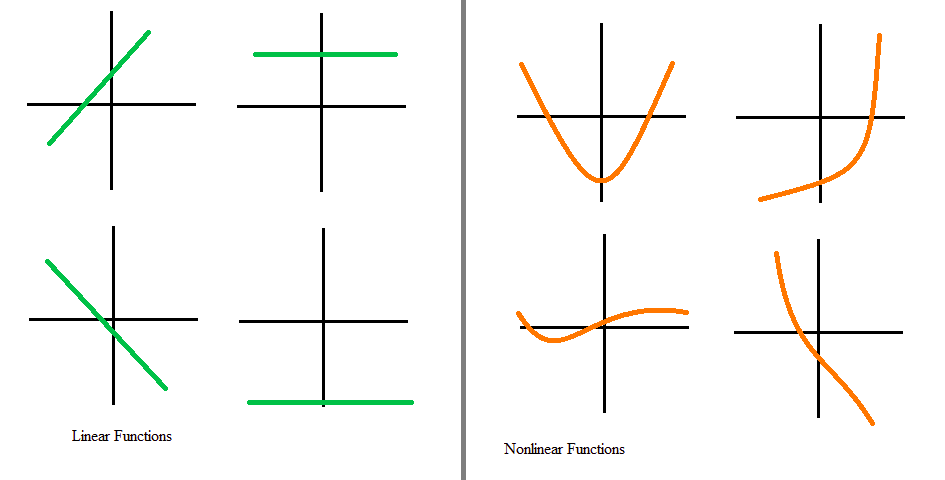
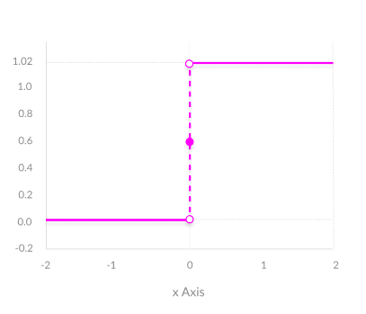
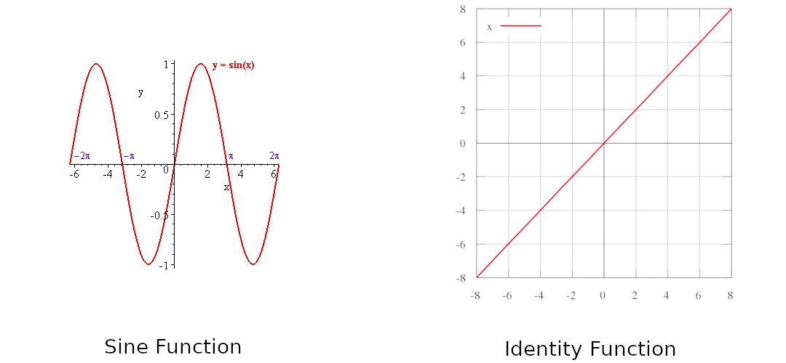
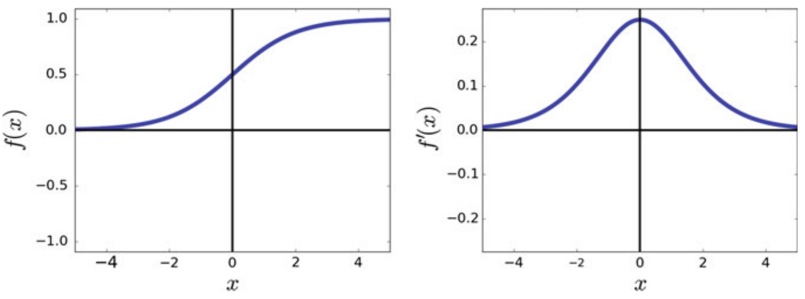
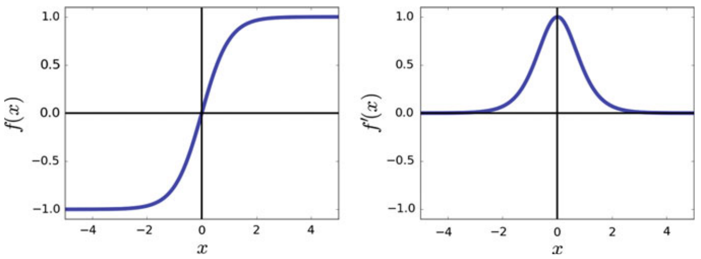
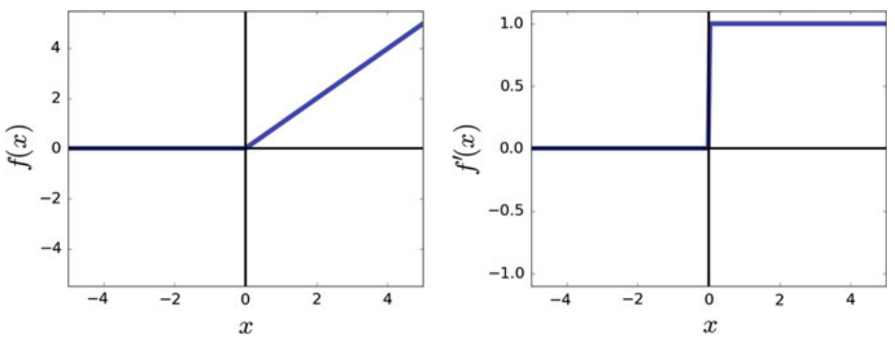
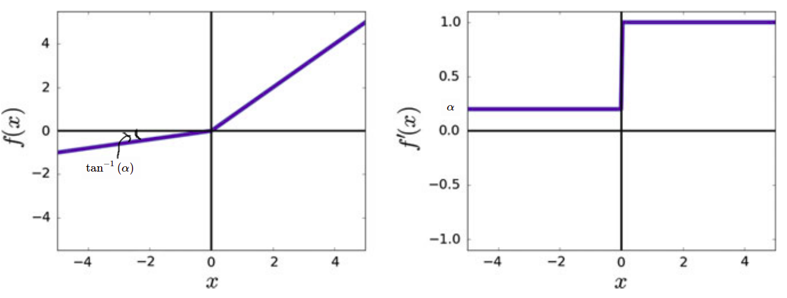
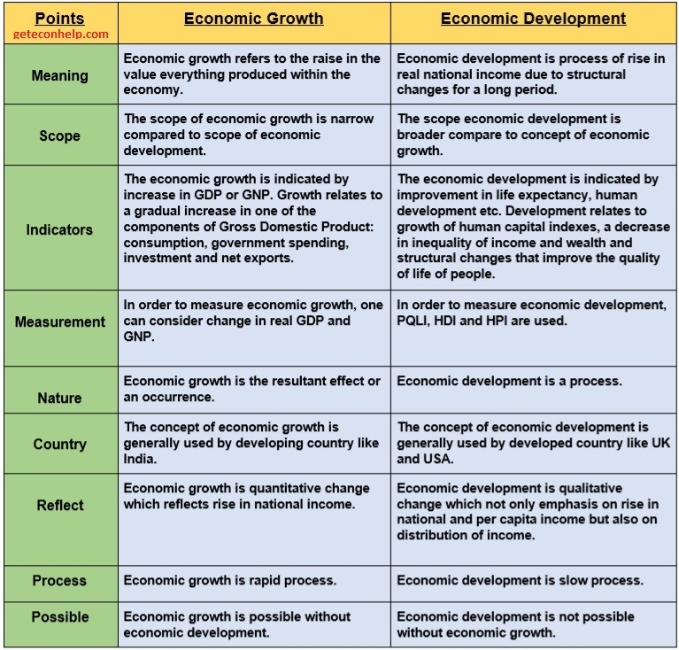

Mathematics
Formulas
Algebra
Numbers
- Natural numbers
- Whole numbers
- Integers
- Ration numbers
- Irrational numbers such that root can't find correctly.
- Read numbers =
Ratio
If then
General Formulas
Computer Science
Operating System
Process
Process: It is a program in execution. A process is the unit of work in a modern time-sharing system.
We can divide processes as system processes executing system code and user processes executing user code.
A batch system executes job while time shared system has user programs or task.
Process
A process is more than the program code, which is sometimes known as the text section. It also includes the current activity, as represented by the value of the program counter and the contents of the processor's registers. A process generally also includes the process stack, which contains temporary data (such as function parameters, return addresses, and local variables), and a data section, which contains global variables. A process may also include a heap, which is memory that is dynamically allocated during process run time.

Process State
Each process is in one of the following state.
- New: The Process is being created
- Running: Instructions are being executed
- Waiting: It is waiting for some event to occure like I/O
- Ready: The process is wating to be assigned to a processor
- Terminated: The process has finished execution

Note: Only one process can be running on any processor at any instant.
Process Control Block(PCB) / Task Control Block
It contains information about process. Some of it is below:
- Process State
- Program Counter: Address of next instruction
- CPU registers: registers vary in number & types as per architecture of CPU. Examples, accumulators, index registers, stack pointers, general purpose registers
- CPU scheduling info: Includes process priority, pointers to scheduling queues, and any other scheduling parameters.
- Memory management info: includes value of base & limit registers, page tables or segment tables depending on memory system.
- Accounting Info: Includes amount of CPU & real time used, time limits, account numbers, job / process numbers etc
- I/O status info: includes list of I/O devices allocated to process, list of open files.
PCB in Linux is represented by task_struct. All task_struct are kept in doubly linked list.
Threads
Process is a program that performs single threads of execution. But modern systems allows a process to have multiple threads of execution & thus to perform more than one task at a time.
On a system that supports threads, the PCB is expanded to include information for each thread.

Process Scheduling
- Object of Multiprogramming: To maximize CPU utilization, CPU should be running all time
- That can be achieved by switching processes on CPU
- Process schedular selects available process for program execution on CPU.
Scheduling queues
The processed enter the system , they are put into job queue, which consistes of all processes in the system. The processes that are residing in main memory and are ready & waiting to execute are kept on list called ready queue.
This queue is generally stored as linked list.
The list of proceses waiting for particular I/O device is called device queue. each device has its own device queue. In above image, we have magnetic tape, disk queues.
Queueing Diagram

A new process is initially put in ready queue. It waits there until it is selected for execution, or is dispatched.
Schedulers
schedular select process from queue for execution.
2 Types of schedulars
- Long term scheduler or Job scheduler: selects processes from mass-storage device (disk) and loads them into memory for execution.
- Short-term scheduler or CPU scheduler: selects from among the processes that are ready to execute and allocates CPU to one of them.
Differece lies in frequenct. Short term scheduler must select process for CPU frequently. The long term schedular controls degree of multiprogramming (number of processes in memory
I/O bound process more time spends doing IO than computation while CPU-Bound is exactly opposite.
Time sharing systems like UNIX and Windows oftern have no long-term schedular but simply put every new process in memory for the short term schedular.
Medium term schedular: it is sometimes advantageous to remove processes from memory (and from active contention for CPU) and thus reduce the degree of multiprogramming. Later process can be reintroduced into memory and its execution can be continued where it left off. This scheme is called swapping.

Context Switch
interrupts cause the OS to change CPU from its current task and to run kernel routine. When interrupt occurs, system needs to save the current context of process running on CPU so that it can restore that context when its processing is done.
When context switch occurs, the kernel perform state save of old process in its PCB and state restore for saved context of new process scheduled to run.
Context switch time is pure overhead, because system does no useful work while switching.
Operations on Processes
Process Creation
- process can create new processes via syscalls like
fork. child processes inherits address space of parent. - child process can call
execsyscall to change memory space with new program. - example, more examples
#define _GNU_SOURCE
#include <stdio.h>
#include <unistd.h>
#include <stdlib.h>
#include <sys/wait.h>
int main(int argc, char const *argv[]) {
pid_t p = getpid();
printf("My Process Id: %d\n", p);
/* create new process */
pid_t child = fork();
if (child == 0) {
printf("I am child!!! (%d)\n", getpid());
} else {
int rv = 0, exit_code = -1;
pid_t c = wait(&rv);
if (WIFEXITED(rv)) {
exit_code = WEXITSTATUS(rv);
}
printf("I am Parent!!! (%d). Child (%d) exited. Exit code: %d\n",
getpid(), c, exit_code);
}
return 0;
}
Interprocess Communication
code can be found https://github.com/lets-learn-it/c-learning/tree/master/17-ipc
| Technique | Model | Purpose | Granularity | Network |
|---|---|---|---|---|
| pipe/FIFO | message passing | data exchange | byte stream | local |
| socket | message passing | data exchange | either | either |
| message queue | message passing | data exchange | structured | local |
| shm() | shared memory | data exchange | none | local |
| memory mapped file | shared memory | data exchange | none | local |
| signal | message passing | synchronization | none | local |
| semaphore | message passing | synchronization | none | local |
Pipes
- pipes are unidirectional
- pipes are order preserving
- pipes have limited capacity and they use blocking I/O. If a pipe is full, any additional writes to the pipe will block the process until some of the data has been read.
- pipes send data as unstructured byte streams.
- Messages that are smaller than the size specified by
PIPE_BUFare guaranteed to be sent atomically. As such, if two processes write to a pipe at the same time, both messages will be written correctly and they will not interfere with each other.
It is very important to close the unused end of the pipe immediately after the fork(). Failure to do so can cause programs to freeze unexpectedly.
Example: parent process will try to read from the pipe. Instead of immediately returning, the process will block until an EOF (end-of-file) is written into the pipe. Since the child is the only other process that could write to the pipe and the child exits without writing anything, the parent will block indefinitely.
Named Pipes / FIFO
Above pipes (anonymous pipes) can't be used for unrelated processes. Specifically, the call to pipe() must happen within the same program that later calls fork().
FIFOs work by attaching a filename to the pipe thats why named pipes.
Also similar to anonymous pipes, FIFOs use blocking I/O until both ends are opened by at least one process.. For using non blocking fifo, pass the O_NONBLOCKoption during the call to open() to make the FIFO access non-blocking.
Creating FIFO
- use
mkfifo()/mkfifoat()/mknod/mknodatto create fifo - other process can access fifo by calling
open()on associated filename. (should have permissions)
When all readers for a FIFO close and the writer is still open, the writer will receiver the signal SIGPIPE the next time it tries to write(). The default signal handler for this signal prints “Broken Pipe” and exits.
Message Queues
POSIX message queues
- for processes to communicate by exchanging structured messages.
- When a message is retrieved from the queue, the process receives exactly one message in its entirety; there is no way to retrieve part of a message and leave the rest in the queue.
- message queues are special identifiers and not file descriptors.
- message queues do not require or guarantee a first-in, first-out ordering. depends on priority.
- Message queues have kernel-level persistence and use special functions or utilities for removing them. Killing the process will not remove the message queue.
- POSIX message queue is only removed once it is closed by all processes currently using it.
- message queues has asynchronous notification feature means reader do not wait for message
- can add attributes to queue like message size or capacity of queue.
Steps
// Open (and possibly create) a POSIX message queue.
mqd_t mq_open (const char *name, int oflag, ... /* mode_t mode, struct mq_attr *attr */);
// Get the attributes associated with a given message queue.
int mq_getattr(mqd_t mqdes, struct mq_attr *attr);
// Close a message queue.
int mq_close (mqd_t mqdes);
// Initiate deletion of a message queue.
int mq_unlink (const char *name);
// Send the message pointed to by msg_ptr with priority msg_prio.
int mq_send (mqd_t mqdes, const char *msg_ptr, size_t msg_len, unsigned int msg_prio);
// Receive a message into a buffer pointed to by msg_ptr and get its priority msg_prio.
ssize_t mq_receive (mqd_t mqdes, char *msg_ptr, size_t msg_len, unsigned int *msg_prio);
Asynchronous MQ
- by default, if queue is full, writer will block and if no messages available, reader will block
- We can use
O_NONBLOCKwhile opening queue inoflagbit mask. which will return error instead of blocking. - Or we can use
mq_timedsend()andmq_timedreceive()which takes parameterabs_timeout. It will block read/write tillabs_timeout - Most useful way is using
mq_notify(). it can be used for requesting asynchronous notification when message is sent.
SystemV message queues
- use
ipcscommand to list message queues andipcrmto delete them.
#include <sys/msg.h>
// create message queue
key = ftok("./queue.txt", 'b');
msgq = msgget(key, 0666 | IPC_CREAT);
// message
// message can be any struct as long as first element is long
struct _person {
int age;
char name[20];
}_person;
struct my_msg {
long mtype;
person p;
};
// create message
struct Message message;
// while receiving, receiver will specify this id
message.msgid = 2;
strncpy(message.p.name, "Parikshit", sizeof(msg)+1);
message.p.age = 26;
// send msg
bytes = msgsnd(msgq, &message, sizeof(person), 0)
// read msg
// get message of type 2
msgrcv(msgq, &message, sizeof(message), 2, 0);
person p = (person) message.p;
// delete message queue
msgctl(msgq, IPC_RMID, NULL);
Shared memory
Sockets
Memory Mapped files
- memory of region corresponds to a traditional file on disk.
- no need of
read(),write()orfseek()because file is already in memory. - Memory-mapped files allow for multiple processes to share read-only access to a common file. As a straightforward example, the C standard library (glibc.so) is mapped into all processes running C programs.
- when we use
read()with file, kernel copies data from disk to kernel's buffer cache and then copies to process's user mode memory. But memory mapped files bypass buffer cache & copies directly into user mode portion of memory. - If shared region is writable, memory mapped files provide extremely fast IPC data exchange.
Setting up regions in both processes is expensive operation in terms of execution time.
- memory mapped files create persistent IPC. in case of pipes, message wont be available when any process reads it.
Disadvantages of bypassing kernel's buffer cache
- If 2 processes access same file using
read()function, kernel's buffer will read file from disk once and copy it to user space of those respective processes. - So second read will be slower in case of memory mapped files because there is no kernel's buffer.
C library functions
// map a file by fd into memory at address addr
// prot is protection. discussed below
void *mmap (void *addr, size_t length, int prot, int flags, int fd, off_t offset);
// Unmap a mapped region.
int munmap (void *addr, size_t length);
// Synchronize mapped region with its underlying file.
int msync (void *addr, size_t length, int flags);
Region protections and privacy
These protections only apply to the current process. If another process maps the same file into its virtual memory space, that second process may set different protections. As such, it is possible that a region marked as read-only in one process may actually change while the process is running.
| Protection | Actions Permitted |
|---|---|
| PROT_NONE | The region may not be accessed |
| PROT_READ | The contents of region can be read |
| PROT_WRITE | The contents of region can be modified |
| PROT_EXEC | The contents of region can be executed |
Privacy
In flags parameter, region can be designated as private (MAP_PRIVATE) or shared (MAP_SHARED). exactly one flag is required while calling mmap(). In addition to these flags, there are multiple falgs available https://man7.org/linux/man-pages/man2/mmap.2.html
Mapping
A file is mapped in multiples of the page size. For a file that is not a multiple of the page size, the remaining bytes in the partial page at the end of the mapping are zeroed when mapped, and modifications to that region are not written out to the file.
Signals
-
Signals are software interrupts. They provide way of handling asynchronous events.
-
kill()function allows process to send any signal to another process/process group. (need to be owner of the process that we are sending signal to, or superuser). -
process can define what to do when XYZ signal occurs using
signal(int sigcode, void (*func) (int)). func can be 1. constant SIG_IGN (ignore signal) 2. constant SIG_DFL (default action) or 3. address of function.We can tell kernel to do one of below action
- Ignore the signal: This works with all signals except SIGKILL and SIGSTOP. These two signals provide kernel & superuser a way to kill or stop process.
- Catch the signal: We can register function with kernel. We can write function which perform clean up when SIGTERM signal occurs. Note: SIGKILL & SIGSTOP can't be caught.
- Let default action apply: Every signal has their own default action. Note: most signals has terminate process as default action.
-
When new process created, it inherits parent's signal disposition (action for signal). This is because child starts off with copy of parent's memory image, address of signal catching function.
Semaphores
POSIX semaphores
System V semaphores
File Locking
files can be used for IPC by locking mechanism.
- Mandatory locking: It will prevent
read()andwrite()to file. - Advisory locking: processes can still read and write from file while it's locked. Process has to check if file is locked or not.
Mandatory Locking
https://stackoverflow.com/questions/77931997/linux-mandatory-locking-for-file-locking
Advisory Locking
- process can lock file for reading or writing. Multiple processes can lock for reading at same time.
- When process lock file for writing, no other process can lock for reading or writing.
- for locking, we can use either
flock()orfcntl().
Lock/Unlock file
#include <fcntl.h>
struct flock fl = {
.l_type = F_WRLCK, /* F_RDLCK, F_WRLCK, F_UNLCK */
.l_whence = SEEK_SET, /* SEEK_SET, SEEK_CUR, SEEK_END */
.l_start = 0, /* Offset from l_whence */
.l_len = 0, /* length, 0 mean whole file */
// .l_pid /* PID holding lock, F_RDLCK only. set bu kernel */
};
int fd = open("./file.txt", O_WRONLY);
// lock file
fcntl(fd, F_SETLKW, &fl); /* F_GETLK, F_SETLK, F_SETLKW */
// unlock same region of file
fl.l_type = F_UNLCK;
fcntl(fd, F_SETLK, &fl);
when you open the file, you need to open it in the same mode as you have specified in the lock. If you open the file in the wrong mode for a given lock type,
fcntl()will return-1anderrnowill be set toEBADF.
Check if file locked
struct flock fl = { 0 };
int fd = open("../file.txt", O_WRONLY);
fcntl(fd, F_GETLK, &fl); /* F_GETLK, F_SETLK, F_SETLKW */
if (fl.l_type == F_WRLCK) {
printf("file is locked by process %d\n", fl.l_pid);
} else {
printf("file not locked.\n");
}
Database Management System
Computer Network
Data Communication
Def: Exchange of data between two devices via some form of transmission medium such as a wire cable.
Effectiveness of Data communication system depends on
- Delivery: Data must be received by intended device or user and only that device or user
- Accuracy: system must deliver data accurately
- Timeliness: Late delivery of data is useless.
- Jitter: Variation in packet arrival time.
Components

- Message: data to be communicated. eg text, images etc
- Sender: device that sends data. Eg computer, telephone
- Receiver: device that receives data
- Transmission Medium: physical path by which a message travels. Eg twisted pair wire, coaxial cable, fibre optic
- Protocol: set of rules that govern data communications. Represent agreement between communicating devices.
Data Representation
- Text: ASCII, Unicode systems are used to encode text data.
- numbers: numbers can be directly converted into binary
- Images: Image is composed of matrix of pixels. Most popular method for colored image is RGB
- Audio: It is continuous. We can send it as it is or can discretized it.
- Video: number of pictures.
Data Flow

- Simplex: Eg. Keyboard & traditional monitors
- Half Duplex: Eg. Walkie talkies
- Full duplex: Eg. telephone
Networks
def: It is set of devices connected by communication links.
Network Criteria
- Performance: can be measured in transit time (time required for message to travel from one device to another) & response time (time between inquiry & response). performace depends on number of users, type of transmission medium,capabilities of connected devices & efficiency of software. performace is evaluated by Throughput & delay
- Reliability: It is frequency of failure, the time it takes a link to recover from failure & networks robustness in catastophe
- Security: Includes protecting data from unauthorized access, protecting data from damage & development and implementing policies, procedures for recovery from breaches and data losses.
Physical Structures
Type of Connection
- Point-to-Point: dedicated link between two devices. Entire capacity reserved.
- Multipoint: more than two specific devices share a single link. capacity is shared, either spatially or temporally.
Physical topology
How physical network is laid out.
Mesh
every device has a dedicated point-to-point link to every other device. physical links in a fully connected mesh with nodes, will be . To accomodate that many links, every device on network must have IO ports.
| Advantages | Disadvantages |
|---|---|
| dedicated links no traffic problem. | cabling and IO ports requirement is high. |
| robust. if one link goes down does not impact entire system | |
| privacy/security as dedicated links | |
| fault identification and isolation easy |
Mesh topology is usually implemented in limited fashion. eg backbone connecting main computers.
Star
each device has dedicated point-to-point link only to a central controller (hub).
| Advantages | Disadvantages |
|---|---|
| less expenssive than mesh topology | hub goes down, whole system goes down. |
| robustness if hub is not down. | more cabling than ring/bus |
| fault identification and isolation easy |
used in LANs
Bus
multipoint. single cable acts as backbone. nodes are connected to bus cable by drop lines and taps.
| Advantages | Disadvantages |
|---|---|
| ease of installation | signal get weaker as distance increase in nodes |
| cheap as only backbone cable required. | difficult reconnection & fault isolation |
| fault identification and isolation easy | fault in bus stops all transimission |
Ring
each device has a dedicated P2P connection with only two devices on either side of it.
| Advantages | Disadvantages |
|---|---|
| easy to install & reconfigure | break in ring can disable entire network |

Reference Models
OSI
TCP/IP
Physical Layer
Data Link Layer
Network Layer
Transport Layer
Application Layer
Data Structure & Algorithms
STL Cheatsheet
Containers

Algorithms

Searching
Linear Search
Given a array of integers and also key to find in that array. eg
3
10 55
1 2 4 5 7 88 6 45 87 55
5 22
454 785 41 12 65
17 555
1 2 3 4 5 6 7 88 95 45 15 555 14236 141 15 184 12354
int linear_search(int *arr, int n, int target) {
for (int i=0;i<n;i++) {
if (arr[i] == target) return i;
}
return -1;
}
Binary Search
Given a array of integers in non decreasing order and also key to find in that array. eg
3
10 55
1 2 4 5 7 55 88 99 155 585
5 22
22 85 365 858 993
17 555
1 2 3 4 5 6 7 15 15 45 88 95 141 184 555 12354 14236
int binary_search(int *arr, int n, int target) {
int left = 0, right = n - 1, mid;
while (left <= right) {
mid = left + ((right - left) / 2);
if (arr[mid] == target) return mid;
else if (arr[mid] < target) left = mid + 1;
else right = mid - 1;
}
return -1;
}
Sorting
Theory of Computation
Artificial Intelligence & Machine Learning
Deep Learning
Fully Connected

Artificial Neural Networks are inspired by Human Neural System. In human neural system, axons of one neuron are connected with dendrites of another and they are regulating electric signal by using chemicals. This is higher level working of human neuron. number of these neurons are used for complex decision making. It's just intro 😃.
Logistic Regression
Problem
We have to find is there a cat in image or not. This is binary classification because either cat is present or not in image (1 or 0).

Before we start learning logistic regression, lets see how image is stored and presented in computer because we have to work on these images. Images are continuous signals in space but storing and processing continuous signal is too hard 🙁. So images are discretized and then stored and processed in computers. images are stored in 3D matrix with 3 channels i.e. red, green, blue (RGB).

As shown in above image, images are shored in 3D matrix. But for training on logistic regression, we need vector as a input. So We will roll out this image into long column vector. given image is 64x64x3 size where 64 is height and width of image. Actually it depends on situation. for example, in numpy img.shape gives first dimension as height of image while mentioning resolution of image, we do opposite like 1920x1080.
So the problem: Given a cat picture , we want probability of cat in image i.e. .
Notation
We will see all notation in basic neural network. some of them are not used in logistic regression but we need them as we progress in article.
Sizes
- : number of examples in dataset
- : input size
- : output size
- : Number of hidden units in layer.
- : number of layers in network.
Objects
- is the input matrix
- is the example represented as a column vector
- is the label matrix or actual output while training
- is the output label for the example
- is the weight matrix of layer
- is the bias vector in the layer
- is the predicted output vector. Also denoted by .
Algorithm
Given , we want . As below image, we will give input as rolled image and output will be 1 if cat in image else 0. in image, are weights and is bias. These are learning parameters means we will learn them while training phase.

if we want to explain above image in one line then this line will be like this weighted sum over input is added to bias and whatever we got, pass it to activation function. Here weighted sum means multiply weights to respective input i.e. and add them. Lets consider as a sum of weighted sum of input and bias.
Activation Function
If you are familiar with linear regression then you might saw above image except activation function. In linear regression, we are finding real value i.e. but here we want probability of cat in image then it must be in . And also it introduces non-linearity to the output . We will use sigmoid activation function in this turtorial. There are other activations functions are also available like ReLU, Leaky ReLU, tanh etc.
We need derivative of sigmoid function while sending error backward. So lets find now.
When you plot sigmoid function, you will find graph shown below.

Training
Weights are initialized randomly to eliminate symmetry problem which arises when we initialize weights to zeros. Biases can be initialized to zeros.
Basic steps are 1. Ininitialize weights and biases 2. forward pass means find using input and weights, biases 3. compare with i.e. predicted output with actual output and then backpropagate errors to make changes appropriately in weights and biases.
Lets take example. We have dataset with 10000 () images of with cat and without cat in it. when every image of size rolled out forms 12228 () features long vector. We got input . Now label (Actual Output) for these examples is .
Let's see code for initializing and forward pass.
import numpy as np
# suppose we have imput and output with us.
print(X.shape)
print(Y.shape)
Output
(12228, 10000)
(1, 10000)
# initialize weights and biases
W = np.random.rand(12228, 1) # input * output
b = np.zeros(1,)
# learning rate
alpha = 0.001
# Now forward pass
Z = np.dot(W.T, X) + b
def sigmoid(X):
return 1 / (1 + np.exp(- X))
def inv_sigmoid(X):
return sigmoid(X) * (1-sigmoid(X))
y_hat = sigmoid(Z)
Now time for Back Propagation. But it is too risky to say back propagation because in logistic regression, error is not sent back to another layer (😃 Only Single layer). For computing loss in single training example, we will use binary cross entropy loss and we can formulate loss (error) function as
We can also use our loss function used in linear regression but this loss function is non-convex So its too hard to find global minima.
Until now we defined loss function which can tell us that How good a particular example doing? But we want to find How good all examples doing?. For that purpose we need cost function and it can be defined as
Gradient Descent
Now only remaining job is to send loss backward and update weights and biases appropriately. For updating this parameters, we have to find cost w.r.t. weights and biases. Like below
In above equation, is learning rate.
The amount that the weights are updated during training is referred to as the step size or the learning rate. Specifically, the learning rate is a configurable hyperparameter used in the training of neural networks that has a small positive value, often in the range between 0.0 and 1.0.
To find and , we need to expand equation of .
It's time to find gradients w.r.t. weights and biases. currently, call as . and for sake of simplicity, put aside.
Now we will use above 2 equations to find and
Finally done 😇. Time for code.
# Find cost
cost = -(1/m) * (Y*np.log(y_hat)+(1-Y)*np.log(1-y_hat))
dw = (1/m) * np.dot((y_hat - y), X.T)
db = (1/m)* np.sum(y_hat - y, axis=1, keeps_dim=True)
# update w and b
W = W - alpha * dw
b = b - alpha * db
Neural Network
Still now we learned logistic regression and updating parameters in it. Logistic regression unit is also called as neuron in neural network. You can compare both neuron and neural network in below image. Neurons are stacked in 2 dimensional space and all neurons from previous layer are connected to all neurons in current layer.
In above image (b), 2 inputs are given to Hidden layer and these all 5 neurons in hidden unit produces which will pass to output layer. In image, 1 circle means 1 neuron. and (b) has 2 layers (Input is not considered as layer). remember means activations produced by unit in layer.
Forward Propagation

In above image is our in logistic regression. In logistic regression we saw is weight matrix but here we have number of neurons so for each neuron we have weight matrix and represented by where is layer and i is unit(neuron) in that layer. and also separate bias for each neuron . But while implementing, we use vectorization for fast computation. So all weights for neurons is stacked and created a row vector of for each layer. Now weights of layer are . Similarly biases are also stacked and created column vector.
Suppose, We are at layer so previous layer has units and current layer has units then shape of weight matrix of layer will be . and shape of bias matrix will be . I know you are confused because shape of weight matrix in logistic regression is opposite what we are seeing here. To make implementation simple we are doing this. You can use another approach also.
Lets implement in python as shown in above image.
# We already have X and Y with us
# define units list
units = [3,4,1] # input, hidden, output
#initialise weights and biases
W_1 = np.random.rand(units[1],units[0])
b_1 = np.zeros((units[1],1))
W_2 = np.random.rand(units[2],units[1])
b_2 = np.zeros((units[2],1))
# Feed forward
z_1 = np.dot(W_1,X) + b_1
a_1 = sigmoid(z_1)
z_2 = np.dot(W_2,a_1) + b_2
y_hat = sigmoid(z_2) # or a_2
Back Propagation
We already saw in logistic regression that how to update and but for updating and , we need and ; here and are considered as all weights and biases in network. means cost of final prediction. Lets find some more derivatives. But before that, see computation graph for our 2 layer neural network.

From above graph, we can find below equations. You may think that Why this equations re-arranged like that? Now these equations can work with multiple examples at a time.
Now we can find and
# Some code copied from logistic regression
# Find cost
cost = np.sum(-(1/m) * (Y*np.log(y_hat)+(1-Y)*np.log(1-y_hat)))
dZ_2 = np.array(y_hat - y)
dw2 = (1/m) * np.dot(dZ_2, a_1.T)
db2 = (1/m)* np.sum(dZ_2, axis=1, keepdims=True)
dZ_1 = np.dot(W_2.T,dZ_2) * inv_sigmoid(z_1)
dw1 = (1/m) * np.dot(dZ_1, a_1.T)
db1 = (1/m)* np.sum(dZ_1, axis=1, keepdims=True)
# Update weights
W_1 = W_1 - alpha * dw1
b_1 = b_1 - alpha * db1
W_2 = W_2 - alpha * dw2
b_2 = b_2 - alpha * db2
Deep L-layer Neural Network

As shown in below image, first network (actually not network) is one neuron or logistic regression unit or perceptron. and are also considered as shallow. We don't have any predefined boundary which can say What depth of network required to become deep network?. We can say last network may be deep.

We saw is number of neurons in layer. We will implement neural network in above image in this article.
Forward Propagation
Output from layer is sum of weighted sum of output of previous layer and bias. We saw this in previous article. Now generalize this.
In above equations, means activation function used in that particular layer. and means total number of layers excluding input. When then
Let's initialize weights and biases. We will use units (python list) to store units in each layer. units[0] will be input size . We will use dictionary so that no need to use different variable names.
# import required libraries
import numpy as np
# create some data
m = 2 # no of samples
X = np.random.rand(3,m)
Y = np.random.rand(1,m)
alpha = 0.01 # learning rate
# units in each layer
# first number (3) is input dimension
units = [3, 4, 4, 4, 4, 3, 1]
# Total layers
L = len(units) - 1
# parameter dictionary
parameters = dict()
for layer in range(1, L+1):
parameters['W' + str(layer)] = np.random.rand(units[layer],units[layer-1])
parameters['b' + str(layer)] = np.zeros((units[layer],1))
Lets find predicted output using above generic equations.
cache = dict()
cache['a0'] = X
for layer in range(1, L+1):
cache['Z' + str(layer)] = np.dot(parameters['W' + str(layer)],cache['a' + str(layer-1)]) + parameters['b' + str(layer)]
cache['a' + str(layer)] = sigmoid(cache['Z' + str(layer)])
cache['a' + str(L)] will be the predicted output. still now, we completed forward pass of neural network. Now the important part i.e. backpropagation for updating learnable parameters.
Backward Pass
As we want generic backpropagation steps, we need to define some notations
- : error in cost function with respect to
- : error in cost function with respect to
- : error in cost function with respect to
- : error in cost function with respect to
- : derivative of activation function used in layer i.e.
For backword pass, we will take some equations from our previous article. I am pasting these equations down without any proof. If you want to check proof, visit previous article.
In above equation, means . Now to backpropagate error to previous layers we will copy-paste following equations from previous article.
Now we need equations for updating weights and bias. What you think... Let's copy them also
In this article, we will use sigmoid activation function all the time. and we already defined it and it's derivative in previous article. So we will call it directly. Now lets see code for backpropagation
y_hat = cache['a' + str(L)]
cost = np.sum(-(1/m) * (Y*np.log(y_hat)+(1-Y)*np.log(1-y_hat)))
cache['dZ' + str(L)] = (1/m) * (y_hat - Y)
cache['dW' + str(L)] = np.dot(cache['dZ' + str(L)], cache['a' + str(L-1)].T)
cache['db' + str(L)] = np.sum(cache['dZ' + str(L)], axis=1, keepdims=True)
for layer in range(L-1,0,-1):
cache['dZ' + str(layer)] = np.dot(parameters['W' + str(layer+1)].T, cache['dZ' + str(layer+1)]) * inv_sigmoid(cache['Z' + str(layer)])
cache['dW' + str(layer)] = np.dot(cache['dZ' + str(layer)], cache['a' + str(layer-1)].T)
cache['db' + str(layer)] = np.sum(cache['dZ' + str(layer)], axis=1, keepdims=True)
Now time to update weights and biases using learning rate
for layer in range(1, L+1):
parameters['W' + str(layer)] = parameters['W' + str(layer)] - alpha * cache['dW' + str(layer)]
parameters['b' + str(layer)] = parameters['b' + str(layer)] - alpha * cache['db' + str(layer)]
Code
Now lets see final code in action. Copy this code in some python file and run it. You will find that cost is decreasing as iterations increases.
# import required libraries
import numpy as np
# create some data
m = 2 # no of samples
X = np.random.rand(3,m)
Y = np.random.rand(1,m)
alpha = 0.01 # learning rate
# units in each layer
# first number (3) is input dimension
units = [3, 4, 4, 4, 4, 3, 1]
# Total layers
L = len(units) - 1
# parameter dictionary
parameters = dict()
for layer in range(1, L+1):
parameters['W' + str(layer)] = np.random.rand(units[layer],units[layer-1])
parameters['b' + str(layer)] = np.zeros((units[layer],1))
def sigmoid(X):
return 1 / (1 + np.exp(- X))
def inv_sigmoid(X):
return sigmoid(X) * (1-sigmoid(X))
cache = dict()
cache['a0'] = X
epochs = 100
for epoch in len(epochs):
for layer in range(1, L+1):
cache['Z' + str(layer)] = np.dot(parameters['W' + str(layer)],cache['a' + str(layer-1)]) + parameters['b' + str(layer)]
cache['a' + str(layer)] = sigmoid(cache['Z' + str(layer)])
y_hat = cache['a' + str(L)]
cost = np.sum(-(1/m) * (Y*np.log(y_hat)+(1-Y)*np.log(1-y_hat)))
print(cost)
cache['dZ' + str(L)] = (1/m) * (y_hat - Y)
cache['dW' + str(L)] = np.dot(cache['dZ' + str(L)], cache['a' + str(L-1)].T)
cache['db' + str(L)] = np.sum(cache['dZ' + str(L)], axis=1, keepdims=True)
for layer in range(L-1,0,-1):
cache['dZ' + str(layer)] = np.dot(parameters['W' + str(layer+1)].T, cache['dZ' + str(layer+1)]) * inv_sigmoid(cache['Z' + str(layer)])
cache['dW' + str(layer)] = np.dot(cache['dZ' + str(layer)], cache['a' + str(layer-1)].T)
cache['db' + str(layer)] = np.sum(cache['dZ' + str(layer)], axis=1, keepdims=True)
for layer in range(1, L+1):
parameters['W' + str(layer)] = parameters['W' + str(layer)] - alpha * cache['dW' + str(layer)]
parameters['b' + str(layer)] = parameters['b' + str(layer)] - alpha * cache['db' + str(layer)]
full code can be found 
Multiclass Classification
Still now we only saw binary classification problems (either 1 or 0). In this article, We will see multiclass (means one of the many classes) problem. Lets see directly what is MNIST handwritten digit dataset. It contains 60000 images of handwritten digits (0-9). Total 10 classes 🙄 i.e. multiclass classification. all images are grayscale and 28x28 in size. You can check some samples in below image.
Samples from MNIST Dataset
Before that take simple network with multiclass output. 4 class neural network is shown in below image. Here, shape of will be (4, m) where m is number of examples. Generally shape of is (K, m) where K is number of classes.
 Multiclass Network Sample Example
Multiclass Network Sample Example
Lets revise some terminologies. will be number of samples in dataset and will be size of input then will be the input matrix size. And will be output size then will be the output matrix size. As per our above neural network, label will be one of the following column vector because only 1 out of 4 class will be present for a sample in our example. for our convenience, suppose cat, dog, frog and rabbit these are the classes. So is the cat class. This kind of encoding is called as One Hot Encoding because for some particular sample only one value is hot (1) and other are cool (0).
Initialize Variables
In general, our data will look like the following matrices. is input and is output. in below equation, is number of classes and we use and interchangebly.
Before we jump into forward pass, lets create dataset. We will create random data and at last check whether cost is decreasing or not. If cost is decreasing after each epoch then we can say that our model is working fine.
import numpy as np
# set seed
np.random.seed(95)
# number of examples in dataset
m = 6
# number of classes
K = 4
# input shape
n_x = 3
# input (n_x, m)
X = np.random.rand(n_x, m)
# hypothetical random labels
labels = np.random.randint(K, size=m)
# convert to one hot encoded
Y = np.zeros((4,6))
for i in range(m):
Y[labels[i]][i] = 1
print("X", X)
print("Labels",labels)
print("Y",Y)
Output
X:
[[0.22880349 0.19068802 0.88635967 0.7189259 0.53298338 0.8694621 ]
[0.72423768 0.48208699 0.7560772 0.97473999 0.5083671 0.95849135]
[0.49426336 0.51716733 0.34406231 0.96975023 0.25608847 0.40327522]]
Labels: [2 1 3 0 0 3]
Y:
[[0. 0. 0. 1. 1. 0.]
[0. 1. 0. 0. 0. 0.]
[1. 0. 0. 0. 0. 0.]
[0. 0. 1. 0. 0. 1.]]
Now time to randomly intialize weights and biases to 0. We will create units list which tells us, How may neurons in each layers?
# units in each layer
# first number (3) is input dimension
units = [3, 5, 5, 4]
# Total layers except input
L = len(units) - 1
# parameter dictionary
parameters = dict()
for layer in range(1, L+1):
parameters['W' + str(layer)] = np.random.rand(units[layer],units[layer-1])
parameters['b' + str(layer)] = np.zeros((units[layer],1))
Forward Pass
We saw in forward pass in previous article and no change is required for feed forward. So let's copy equations from previous article. Normally people uses Softmax activation function at last layer but for simplicity, we will continue using Sigmoid.
Lets write code for forward pass in python. We will use our generic code from previous article.
cache = dict()
cache['a0'] = X
for layer in range(1, L+1):
cache['Z' + str(layer)] = np.dot(parameters['W' + str(layer)],cache['a' + str(layer-1)]) + parameters['b' + str(layer)]
cache['a' + str(layer)] = sigmoid(cache['Z' + str(layer)])
Backward Pass
Still what we saw is from previous article. Now the most important part i.e. Loss Function & Cost Function. We already saw difference between loss function and cost function in article 1 of this series. We will use Binary Cross Entropy generalized for classes as our loss function. The formula for it is same as Binary Cross Entropy extended for multiple classes. Below, second equation is vectorized version of first equation.
So the cost function will be the addition of all losses over all examples. So cost function will be
Now its time of finding derivative of loss function. Before that check below image so that you can compare binary classification problem with multiclass classification. When we find , we are done. As per below image, finding is tricky part and all gradient in layers before it can be found using our regular (generic) code. Check previous article.

In below equations, & are representing all weights and biases of network.
Above equation can further vectorized for speedup. I will start another series on High Performance Computing as early as possible. In that article, we will see advantages of vectorization.
Let's implement backpropagation. You may say that both codes from previous article and this article are same. it's because vectorized equation for is same for both binary classification and multiclass classification. Remember our example with random data doesn't make any sense because it don't have any pattern. We care about cost is decreasing or not?.
def cost(y,y_hat):
return -np.sum(y*np.log(y_hat) + (1-y)*(np.log(1-y_hat)))
y_hat = cache['a' + str(L)]
cost_ = cost(y,y_hat)
cache['dZ' + str(L)] = (1/m) * (y_hat - Y)
cache['dW' + str(L)] = np.dot(cache['dZ' + str(L)], cache['a' + str(L-1)].T)
cache['db' + str(L)] = np.sum(cache['dZ' + str(L)], axis=1, keepdims=True)
for layer in range(L-1,0,-1):
cache['dZ' + str(layer)] = np.dot(parameters['W' + str(layer+1)].T, cache['dZ' + str(layer+1)]) * inv_sigmoid(cache['Z' + str(layer)])
cache['dW' + str(layer)] = np.dot(cache['dZ' + str(layer)], cache['a' + str(layer-1)].T)
cache['db' + str(layer)] = np.sum(cache['dZ' + str(layer)], axis=1, keepdims=True)
MNIST Handwritten Digit Recognition
In above random data example, data and output doesn't make any sense so we will see real life example of handwritten digit classification. You already saw about dataset at start of this article.
Load Dataset
Now we will load data. Link to dataset is also given in references and code section.
import numpy as np
np.random.seed(95)
# Load CSV File
data = np.genfromtxt("mnist_train.csv",delimiter = ',')
# first column is labels
y = data[:,0]
# rest 784 columns are features / pixel values.
X = data[:,1:785].T
# Some constants
K = 10 # No of classes
alpha = 0.1 # Learning rate
m = 60000 # No of examples
# convert to one hot encoded
Y = np.zeros((K,m))
for i in range(m):
Y[int(y[i]),i] = 1
# print shape of input and output/label
print('Shape of X:',X.shape)
print('Shape of y:',y.shape)
print('Shape of Y:',Y.shape)
Output
Shape of X: (784, 60000)
Shape of y: (60000,)
Shape of Y: (10, 60000)
Initialize Weights and Biases
# units in each layer
# first number (784) is input dimension
units = [784, 128, 64, 10]
# Total layers
L = len(units) - 1
# parameter dictionary
parameters = dict()
for layer in range(1, L+1):
parameters['W' + str(layer)] = np.random.normal(0,1,(units[layer],units[layer-1]))
parameters['b' + str(layer)] = np.zeros((units[layer],1))
Define Sigmoid and Derivative of Sigmoid Function
def sigmoid(X):
return 1 / (1 + np.exp(- X))
def inv_sigmoid(X):
return sigmoid(X) * (1-sigmoid(X))
Forward Pass
cache = dict()
def forward_pass(X):
cache['a0'] = X
for layer in range(1, L+1):
cache['Z' + str(layer)] = np.dot(parameters['W' + str(layer)],cache['a' + str(layer-1)]) + parameters['b' + str(layer)]
cache['a' + str(layer)] = sigmoid(cache['Z' + str(layer)])
Backward Pass
We will use batch size of 10 samples because of that you will find instead of (All data at a time).
def cost(y,y_hat):
return -np.sum(y*np.log(y_hat) + (1-y)*(np.log(1-y_hat)))
def back_prop(Y):
y_hat = cache['a' + str(L)]
cache['dZ' + str(L)] = (1/10)*(y_hat - Y)
cache['dW' + str(L)] = np.dot(cache['dZ' + str(L)], cache['a' + str(L-1)].T)
cache['db' + str(L)] = np.sum(cache['dZ' + str(L)], axis=1, keepdims=True)
for layer in range(L-1,0,-1):
cache['dZ' + str(layer)] = np.dot(parameters['W' + str(layer+1)].T, cache['dZ' + str(layer+1)]) * inv_sigmoid(cache['Z' + str(layer)])
cache['dW' + str(layer)] = np.dot(cache['dZ' + str(layer)], cache['a' + str(layer-1)].T)
cache['db' + str(layer)] = np.sum(cache['dZ' + str(layer)], axis=1, keepdims=True)
Update Weights and Biases
def update_weights():
for layer in range(1, L+1):
parameters['W' + str(layer)] = parameters['W' + str(layer)] - alpha * cache['dW' + str(layer)]
parameters['b' + str(layer)] = parameters['b' + str(layer)] - alpha * cache['db' + str(layer)]
Start Training
epoch = 30
for i in range(epoch):
cost_tot = 0
for j in range(6000):
forward_pass(X[:,j*10:j*10+10])
cost_tot += cost(Y[:,j*10:j*10+10],cache['a' + str(L)])
back_prop(Y[:,j*10:j*10+10])
update_weights()
if i%5 == 0:
print('epoch ',i,' ',cost_tot)
Output
epoch 0 119429.14804683565
epoch 5 102128.37509302271
epoch 10 90151.75500527128
epoch 15 86009.41961305328
epoch 20 88218.24177992699
epoch 25 90432.20939203199
epoch 30 92974.92502732007
epoch 35 93986.34837736617
epoch 40 92380.93127681084
epoch 45 90417.26686598927
epoch 50 101933.2601655828
Above output shows, cost is decrasing still epoch but for epoch, it is increased. Reason of this is Learning Rate. If learning rate is too small, training takes more time and if learning rate is too high then what happens you already experienced. Finding not too high, not too low learning rate is difficult problem for particular application. We will see another article with heading Hyper parameter tunning tricks in near future.
 Source: jeremyjordan.me
Source: jeremyjordan.me
Check Some Samples
forward_pass(X[:,0:10])
# axis 0 means max columnwise
# axis 1 means max rowwise
predicted = cache['a3'].argmax(axis=0)
actual = Y[:,:10].argmax(axis=0)
print('Actual Labels: ', actual)
print('Predicted Labels: ',predicted)
Output
Actual Labels: [5 0 4 1 9 2 1 3 1 4]
Predicted Labels: [3 0 4 1 4 6 1 3 1 4]
References and Code
[1] Dataset : handwritten digit recognition
You can find code (MNIST)
You can find code (Random Data)
Activation Functions
Characteristics of good activation function
Nonlinear
When the activation function is non-linear, then a two-layer neural network can be proven to be a universal function approximator
a universal function is a computable function capable of calculating any other computable function If we use Linear functions throughout in network then the network is the same as perceptron (single layer network)

Range
When the range is finite, gradient-based optimization methods are more stable because it limits the weights. When the range is infinite, gradient-based optimization methods are more efficient but for smaller learning rates. because weights updation doesn't have a limit on the activation function. You can refer to article in the above list. You will find, weight updation is dependent on the activation function also.
Range and Domain: The domain of a function is the set of all values for which the function is defined, and the range of the function is the set of all values that takes.
For example take function which is sine function. Its range is and domain is

Continuously differentiable
A continuously differentiable function is a function whose derivative function is also continuous in it's domain. Youtube: Continuity Basic Introduction, Point, Infinite, & Jump Discontinuity, Removable & Nonremovable

In the below image, the function is a binary step function and it is discontinuous at and it is jump discontinuity. As it is not differentiable at , so gradient-based methods can make no progress with it.

Monotonic
In calculus, a function defined on a subset of the real numbers with real values is called monotonic if and only if it is either entirely non-increasing, or entirely non-decreasing.
Identity Function is monotonic function and is non-monotonic function.

When the activation function is monotonic, the error surface associated with a single-layer model is guaranteed to be convex.
Monotonic Derivative
Smooth functions with a monotonic derivative have been shown to generalize better in some cases. I think it's because of the local minima problem. While training sometimes networks are stuck at local minima instead of global minima.

Approximates identity near the origin
Usually, the weights and bias are initialized with values close to zero by the gradient descent method. Consequently, or in our case (Check Above Series) will be close to zero.
If approximates the identity function near zero, its gradient will be approximately equal to its input.
In other words, . In terms of gradient descend, it is a strong gradient that helps the training algorithm to converge faster.
Activation Functions
From onward is equation of activation function and is derivative of that activation function which is required during backpropagation. We will see the most used activation function and you can find others on Wikipedia page Link. All function graphs are taken from book named Guide to Convolutional Neural Networks: A Practical Application to Traffic-Sign Detection and Classification written by Aghdam, Hamed Habibi and Heravi, Elnaz Jahani
1. Sigmoid

Pros:
- It is nonlinear, so it can be used to activate hidden layers in a neural network
- It is differentiable everywhere, so gradient-based backpropagation can be used with it
Cons:
- The gradient for inputs that are far from the origin is near zero, so gradient-based learning is slow for saturated neurons using sigmoid i.e. vanishing gradients problem
- When used as the final activation in a classifier, the sum of all classes doesn’t necessarily total 1
- For these reasons, the sigmoid activation function is not used in deep architectures since training the network become nearly impossible
| Characteristic | Yes/No |
|---|---|
| Range | |
| Order of Continuity | |
| Monotonic | Yes |
| Monotonic Derivative | No |
| Approximates Identity near origin | No |
2. Hyperbolic Tangent

The hyperbolic tangent activation function is in fact a rescaled version of the sigmoid function.
Pros:
- It is nonlinear, so it can be used to activate hidden layers in a neural network
- It is differentiable everywhere, so gradient-based backpropagation can be used with it
- It is preferred over the sigmoid function because it approximates the identity function near the origin
Cons:
- As increases, it may suffer from vanishing gradient problems like sigmoid.
- When used as the final activation in a classifier, the sum of all classes doesn’t necessarily total 1.
| Characteristic | Yes/No |
|---|---|
| Range | |
| Order of Continuity | |
| Monotonic | Yes |
| Monotonic Derivative | No |
| Approximates Identity near origin | Yes |
3. Rectified Linear Unit

Pros:
- Computationally very efficient
- Its derivative in R+ is always 1 and it does not saturate in R+ (No vanishing gradient problem)
- Good choice for deep networks
- The problem of the dead neuron may affect learning but it makes it more efficient at the time of inference because we can remove these dead neurons. Cons:
- The function does not approximate the identity function near the origin.
- It may produce dead neurons. A dead neuron always returns 0 for every sample in the dataset. This affects the accuracy of the model.
This happens because the weight of dead neuron have been adjusted such that for the neuron is always negative.
| Characteristic | Yes/No |
|---|---|
| Range | |
| Order of Continuity | |
| Monotonic | Yes |
| Monotonic Derivative | Yes |
| Approximates Identity near origin | No |
4. Leaky Rectified Linear Unit

In practice, leaky ReLU and ReLU may produce similar results. This might be due to the fact that the positive region of these function is identical. 0.01 can be changed with other values between
Pros:
- As its gradient does not vanish in negative region as opposed to ReLU, it solves the problem of dead neuron.
Cons:
| Characteristic | Yes/No |
|---|---|
| Range | |
| Order of Continuity | |
| Monotonic | Yes |
| Monotonic Derivative | Yes |
| Approximates Identity near origin | No |
5. Parameterized Rectified Linear Unit

It is the same as Leaky ReLU but is a learnable parameter that can be learned from data.
Parameter Updation
To update , we need gradient of activation function with respect to .
| Characteristic | Yes/No |
|---|---|
| Range | |
| Order of Continuity | |
| Monotonic | Yes |
| Monotonic Derivative | Yes, if |
| Approximates Identity near origin | Yes, if |
6. Softsign

Pros:
- The function is equal to zero at origin and its derivative at origin is equal to 1. Therefore, it approximates the identity function at the origin.
- Comparing the function and its derivative with a hyperbolic tangent, we observe that it also saturates as increases. However, the saturation ratio of the softsign function is less than the hyperbolic tangent function which is a desirable property
- the gradient of the softsign function near origin drops with a greater ratio compared with the hyperbolic tangent.
- In terms of computational complexity, softsign requires less computation than the hyperbolic tangent function.
Cons:
- saturates as increases
| Characteristic | Yes/No |
|---|---|
| Range | |
| Order of Continuity | |
| Monotonic | Yes |
| Monotonic Derivative | No |
| Approximates Identity near origin | Yes |
7. Softplus

Pros:
- In contrast to the ReLU which is not differentiable at origin, the softplus function is differentiable everywhere
- The derivative of the softplus function is the sigmoid function which means the range of derivative is
Cons:
- the derivative of softplus is also a smooth function that saturates as increases
| Characteristic | Yes/No |
|---|---|
| Range | |
| Order of Continuity | |
| Monotonic | Yes |
| Monotonic Derivative | Yes |
| Approximates Identity near origin | No |
Linux
Networking
Economics
Indian Economics
Economics: The Discipline
economics is the study of how societies use scarce resources to produce valuable commodities and distribute them among different people.
Economics studies how individuals, firms, governments, and other organisations within our society make choices and how these choices determine a society’s use of its resources.
we need to make some choices before we utilise the scarce resources by prioritising some of our needs.
A Working Definition
Economics studies the economic activities of mankind. Similarly, political, social and administrative activities of mankind are studied under Political Science, Sociology and Public Administration, respectively. That is why these disciplines are broadly categorised as humanities as all of them study human activities.
The activities which involve profit, loss, livelihood, occupation, wage, employment, etc., are economic activities. Economics studies all these activities.
Economics and Economy
Economics will come out with theories of market, employment, etc., and an economy is the real picture of the things which emerges after the application of those theories.
many countries selecting the same remedy and tools to fight the same problems might have similar or dissimilar results during a given period. At the same time, two economies selecting different tools to solve the same economic problems might experience the same results or completely different results.
The level and quality of natural resources, the quantity and quality of human resources, the socio-political milieu, the historical background, the psychic make of the human resource, etc., are some of the factors which individually as well as collectively impact an economy while carrying out economic activities
Distribution Network Models
We have 3 types of models
- State: In the first type of distribution system, the state (i.e., the government) takes the sole responsibility of supplying goods and services required by the population with no payments being done by the consumer—the former Soviet Union and Communist China being the best examples.
- Market: In this system, goods and services are made available in the market and on the basis of their demand and supply, their prices are determined in the open market and finally they get distributed to the population.
- State-market mix: This distribution system has certain goods and services which might be made available to the population freely or at the subsidised prices by the state and some might be supplied by the market for which consumers need to pay.
Organising an Economy
Types of Economy
-
Capitalistic Economy: The decisions of what to produce, how much to produce and at what price to sell are taken by the market, by the private enterprises in this system, with the state having no economic role.
-
State Economy: socialistic economy emphasised collective ownership of the means of production (property and assets), it also ascribed a large role to the state in running the economy, while communist economy, on the other hand, advocated state ownership of all properties including labour with absolute power to state in running the economy. Here we see two versions of the state economy—in erstwhile USSR known as the socialist economy and in pre-1985 China as the communist economy.
-
Mixed Economy: The impact of the great depression (1929) spread from the USA to other economies of Western Europe escalating large scale unemployment, downfall in demand and economic activities and lockouts in industrial enterprises. English economist at Cambridge University, John Maynard Keynes (1883–1946) questioned the very principles of ‘laissez-faire’ and the nature of the ‘invisible hand’(Wealth of Nation). He even opined that the invisible hand brings equilibirium to the economy but by ‘strangulating the poor’. He suggested that prices and wages are not flexible enough to provide employment to all. It means there will be some people unemployed when the economy will be at its full potential.
Laissez-faire is an economic system in which transactions between private parties are absent of any form of economic interventionism such as regulation and subsidies. As a system of thought, laissez-faire rests on the axioms that the individual is the basic unit in society and has a natural right to freedom; that the physical order of nature is a harmonious and self-regulating system; and that corporations are creatures of the state and therefore the citizens must watch them closely due to their propensity to disrupt the Smithian spontaneous order.
To get the economy out of the depression, Keynes suggested an increase in government expenditures, discretionary fiscal policy (fiscal deficit, lower interest rates, cheap money supply, etc.) to boost the demand of goods and services as this was the reason behind the depression.
In the capitalist economies of the time, all the basic goods and services were part of the market mechanism, i.e., being produced and supplied by the private sector. It meant that almost everything the people required was supplied by the private enterprises via the market which was ultimately an undimensional movement of money and wealth (from the mass of people to the few who controlled the production and supply chain) and the masses were going through the process of pauperisation every day, thereby weakening their purchasing power. In the end, it affected overall demand and culminated in the Great Depression.
As a follow up to the Keynesian advices, governments of the time started producing and supplying some basic goods and services which are known as ‘public goods’. These goods basically intended to guarantee minimum level of nutrition to all, healthcare, sanitation, education, social security, etc. The expenditure on public goods were incurred on the public exchequer even if it required deficit financing.
The concluding consensus emerged with the publication of the World Development Report (1999) titled Entering the Century in which the WB said, “Governments play a vital role in development, but there is no simple set of rules that tells them what to do.” The World Bank went on to suggest that every country should determine the areas and the extent of the market and the state intervention, depending upon its own stage of economic development, socio-political and other historical factors.
In the process of organising the economy, some basic and important infrastructural economic responsibilities were taken up by the state/governments (centre and state) and rest of the economic activities were left to private enterprises, i.e., the market.
Role of the State in a Economy
Possible roles for the state/government in an economy:
- As a regulator of the economic system (where the state takes important economic decisions, announces the required kind of economic policies, takes the sole responsibility to get them implemented, and controlling and punishing those who don’t oblige to those economic decisions).
- As a producer and/or supplier of ‘private goods and services’ (these include all those goods and services which constitute the part of market and which will be distributed among the needy according to the principles of market mechanism. Here the state earns profit as a private enterprise).
- As a producer and/or supplier of ‘public goods’ or ‘social goods’ (these include goods and services which look essential from the perspective of social justice and well-being for the people. like ducation, healthcare, sanitation, drinking water, nutrition, caring for the differently abled and old, etc.)
The economy which selected both the roles (2 and 3) for the state under monopoly we called them the state. socialist economy at least the labour was not owned and exploited by the state unlike the other—the communist economy where labour used to be under complete state control.
The economic system which left both the roles (2 and 3) as the sole responsibilities of the private sector was called the capitalistic economic system.
Mixed economies had at least kept one economic role fixed for the state (i.e., 3), of supplying public goods to the needy people.
Compulsory roles for the state in economy
- As a regulator of the economic system because If the regulation and control of an economy is left to private individuals or groups (i.e., firms) they will be using the regulatory powers to maximise their profits and returns at the cost of others.
- The responsibility of producing and supplying the social/public goods to the needy cannot be left to the private sector as this is a loss-making exercise. It means, the state will have to take the sole responsibility or may need to expand its role in such areas—as we see it in post-reform India.
What should be left for market?
The responsibility of producing and distributing private goods to the people could be well handled by the private sector as this is a profit-fetching area. As the private sector became capable, in some countries this responsibility was given up by the state in favour of the private sector and better development has been possible in those economies. In this sense, India delayed this process while in Indonesia, Malaysia, Thailand and South Korea allowed entry of the private sector much earlier.
Basically, the WB study, the East Asian Miracle (1993), recognises the above-given shift of one kind of mixed economy to another kind of mixed economy—in the cases of the Malaysian, Thai and South Korean economies—taking place since the mid-1960s. Experts believe that this shift could not take place in time in India. And once it started (1991–92) it was too late and this choice was not voluntary but obligatory.
Washington Consensus
The term ‘Washington Consensus’ was coined by the US economist John Williamson (in 1989) under which he had suggested a set of policy reforms which most of the official in Washington (i.e., International Monetary Fund and World Bank) thought would be good for the crisis-driven Latin American countries of the time.
Ten propositions in Washington Consensus
- Fiscal policy discipline, with avoidance of large fiscal deficits relative to GDP.
- A redirection of public expenditure priorities toward fields offering both high economic returns and the potential to improve income distribution, such as primary health care, primary education, and infrastructure.
- Tax reform (to lower marginal rates and broaden the tax base)
- Interest Rates that are market determined and positive (but moderate) in real terms.
- Competitive exchange rate i.e. rate that is very near to mid market rate.
- Trade liberalisation: liberlization of imports, with particular emphasis on elimination of quantitative restrictions (licensing etc), any trade protection to be provided by low and relatively uniform tariffs.
- Liberalisation of FDI inflows
- Privatisation of state enterprises
- Deregulation (in the sense of abolishing barriers to entry and exit except those justified on safety, environmental and consumer protection)
- Legal security for property rights.
In the aftermath of the Great Recession (after the ‘US sub-prime’ crisis) in the Western economies, it is believed that dependence on market to correct the growth and development may not sustain any longer. and solution to this problems is the Keynesian idea of ‘interventionist state’ seems the ultimate alternative in the present times.
Sectors of an Economy
- Primary Sector: This sector includes all those economic activities where there is the direct use of natural resources as agriculture, forestry, fishing, fuels, metals, minerals, etc. Broadly, such economies term their agricultural sector as the primary sector.
- Secondary Sector: This sector is rightly called the manufacturing sector, which uses the produce of the primary sector as its raw materials.
- Tertiary Sector: This sector includes all economic activities where different ‘services’ are produced such as education, banking, insurance, transportation, tourism, etc. This sector is also known as the services sector.
Types of Economies
- Agrarian Economy: An economy is called agrarian if its share of the primary sector is 50 per cent or more in the total output (the GDP) of the economy. In monetary terms, India is no more an agrarian economy, however the dependency ratio makes it so—India being the first such example in the economic history of the world.
- Industrial Economy: If the secondary sector contributes 50 per cent or more to the total produce value of an economy, it is an industrial economy.
- Service Economy: An economy where or more of the produced value comes from the tertiary sector is known as the service economy.
Idea of National Income
Income level is the most commonly used tool to determine the well-being and happiness of nations and their citizens.
Education and life expectancy can only be enhanced once the required amount of ‘investment’ (expenditure on them) could be mobilised.
GDP
Gross Domestic Product (GDP) is the value of the all final goods and services produced within the boundary of a nation during one year period.
For India, this calendar year is from April to March.
It is also calculated by adding national private consumption, gross investment, government spending and trade balance (exports-minus-imports). The use of the exports-minus-imports factor removes expenditures on imports not produced in the nation, and adds expenditures of goods and service produced which are exported, but not sold within the country.
Uses of GDP
- Per annum percentage change in it is the ‘growth rate’ of an economy.
- It is a ‘quantitative’ concept and its volume/size indicates the ‘internal’ strength of the economy. But it does not say anything about the ‘qualitative’ aspects of the goods and services produced.
- It is used by the IMF/WB in the comparative analyses of its member nations.
NDP
Net Domestic Product (NDP) is the GDP calculated after adjusting the weight of the value of ‘depreciation’. GDP minus the total value of the ‘wear and tear’ (depreciation) that happened in the assets while the goods and services were being produced.
The governments of the economies decide and announce the rates by which assets depreciate (done in India by the Ministry of Commerce and Industry) and a list is published, which is used by different sections of the economy to determine the real levels of depreciations in different assets.
If the value of the domestic currency falls following market mechanism in comparison to a foreign currency, it is a situation of ‘depreciation’ in the domestic currency, calculated in terms of loss in value of the domestic currency.
NDP = GDP - Depreciation
Uses of NDP
- For domestic use only: to understand the historical situation of the loss due to depreciation to the economy. Also used to understand and analyse the sectoral situation of depreciation in industry and trade in comparative periods.
- To show the achievements of the economy in the area of research and development, which have tried cutting the levels of depreciation in a historical time period.
- depreciation and its rates are also used by modern governments as a tool of economic policymaking.
NDP is not used in comparative economics, i.e., to compare the economies of the world. This is due to different rates of depreciation which is set by the different economies of the world.
GNP
Gross National Product (GNP) is the GDP of a country added with its ‘income from abroad’.
The items which are counted in the segment ‘Income from Abroad’ are:
- Private Remittances: the net outcome of the money which inflows and outflows on account of the ‘private transfers’ by Indian nationals working outside of India (to India) and the foreign nationals working in India (to their home countries)
Today, India is the highest recipient of private remittances in the world—as per the World Bank projected at $ 72 billion in 2015 (in 2013 it was $ 70 billion, the year’s highest). China falls second ($ 64 billion) in 2015.
-
Interest on External Loans: balance of inflow (on the money lend out by the economy) and outflow (on the money borrowed by the economy) of external interests. In India’s case it has always been negative as the economy has been a ‘net borrower’ from the world economies.
-
External Grants: the net outcome of the external grants i.e., the balance of such grants which flow to and from India. Today, India offers more such grants than it receives.
In the wake of globalisation, grant outflows from India has increased as its economic diplomacy aims at the playing bigger role at international level.
GNP = GDP + income from abroad
Uses of GNP
- This is the ‘national income’ according to which the IMF ranks the nations of the world in terms of the volumes—at purchasing power parity (PPP). India is ranked as the 3rd largest economy of the world (after China and the USA), while as per the nominal/ prevailing exchange rate of rupee, India is the 7th largest economy (IMF, April 2016).
- It is the more exhaustive concept of national income than the GDP as it indicates towards the ‘quantitative’ as well as the ‘qualitative’ aspects of the economy, i.e., the ‘internal’ as well as the ‘external’strength of the economy.
- It enables us to learn several facts about the production behaviour and pattern of an economy, such as, how much the outside world is dependent on its product and how much it depends on the world.
NNP
Net National Product (NNP) of an economy is the GNP after deducting the loss due to ‘depreciation’.
The formula to derive it may be written like:
NNP = GNP - Depreciation
NNP = GDP + Income from abroad - Depreciation
Uses of GNP
- This is the ‘National Income’ (NI) of an economy. Though, the GDP, NDP and GNP, all are ‘national income’ they are not written with capitalised ‘N’ and ‘I’.
- When we divide NNP by the total population of a nation we get the ‘per capita income’ (PCI) of that nation,
Cost and Price of National Income
Cost
Income of an economy, i.e., value of its total produced goods and services may be calculated at either the ‘factor cost’ or the ‘market cost’.
Factor cost is the ‘input cost’ the producer has to incur in the process of producing something (such as cost of capital, i.e., interest on loans, raw materials, labour, rent, power, etc.). This is also termed as ‘factory price’or ‘production cost/price’.
market cost is derived after adding the indirect taxes to the factor cost of the product, it means the cost at which the goods reach the market, i.e., showrooms (these are the cenvat/central excise and the CST which are paid by the producers to the central government in India).
India officially used to calculate its national income at factor cost (though the data at market cost was also released Since January 2015, the CSO has switched over to calculating it at market price (i.e., market cost).
Once the GST has been implemented it will be easier for India to calculate its national income at market price.
Price
Income can be derived at two prices, constant and current. The difference in the constant and current prices is only that of the impact of inflation.
Inflation is considered stand still at a year of the past (this year of the past is also known as the ‘base year’) in the case of the constant price, while in the current price, present day inflation is added. Current price is, basically, the maximum retail price (MRP) which we see printed on the goods selling in the market.
As per the new guidelines the base year in India has been revised from 2004–05 to 2011–12 (January 2015)
India calculates its national income at constant prices —so is the situation among other developing economies, while the developed nations calculate it at the current prices.
Basically, inflation has been a challenging aspect of policymaking in India because of its level (i.e., range in which it dwindles) and stability (how stable it has been)
- nominal income: The wage someone gets in hand per day or per month.
- real income: this is nominal income minus the present day rate of inflation—adjusted in percentage form.
- disposable income: the net part of wage one is free to use which is derived after deducting the direct taxes from the real/nominal income, depending upon the need of data.
Taxes and National Income
While accounting/calculating national income the taxes, direct and indirect, collected by the government, needs to be considered.
-
Direct Taxes: individual income tax, corporate income tax, i.e., the corporate tax, divident tax, interest tax, etc.)
There is no need of adjustment whether the national income is accounted at factor cost or market cost. This is so because at both the ‘costs’ they have to be the same.
-
Indirect Taxes: cenvat, customs, central sales tax, sales tax/vat, state excise, etc.
If the national income is calculated at factor cost then the corpus of the total indirect taxes needs to be deducted from it. This is because, indirect taxes have been added twice: once at the point of the people/group who pay these taxes from their disposable income while purchasing things from the market, and again at the point of the governments (as their income receipts)
Collection/source of indirect taxes are the ‘disposable income’ (which individuals and companies have with them after paying their direct taxes—from which they do any purchasing and finally, the indirect taxes reach the government)
National Income at Factor Cost = NNP at Market price - Indirect taxes
Subsidies and National Income
Subsidies which are forwarded by the governments need to be adjusted while calculating national income. They are added to the national income at market cost, in the case of India.
National Income at Factor Cost = NNP at Market price - Subsidies
If the national income is derived at the market cost and governments forward no subsidies there is no need of adjustments for the subsidies but after all there is not a single economy in the world today which does not forward subsidies in one or the other form.
National Income at Factor Cost = NNP at Market price - Indirect taxes + Subsidies
Revision in the base year and method of National Income Accounting
The Central Statistics Office (CSO), in January 2015, released the new and revised data of National Accounts, effecting two changes:
- The Base Year was revised from 2004–05 to 2011–12. This was done in accordance with the recommendation of the National Statistical Commission (NSC), which had advised to revise the base year of all economic indices every five years.
- This time, the methodology of calculating the National Accounts has also been revised in line with the requirements of the System of National Accounts (SNA)-2008, an internationally accepted standard.
Changes in Methodology of calculating the National Accounts
-
Headline growth rate will now be measured by GDP at constant market prices, which will henceforth be referred to as ‘GDP’. Earlier, growth was measured in terms of growth rate in GDP at factor cost and at constant prices.
-
Sector-wise estimates of Gross Value Added (GVA) will now be given at basic prices16 instead of factor cost.
The relationship between GVA at factor cost, GVA at basic prices, and GDP (at market prices) is given below:
GVA at basic prices = CE + OS/MI + CFC + production taxes less production subsidies.
GVA at factor cost = GVA at basic prices – production taxes less production subsidies.
GDP = GVA at basic prices + product taxes – product subsidies.
Where,
- CE : compensation of employees;
- OS: operating surplus;
- MI: mixed income;
- CFC: consumption of fixed capital (i.e., depriciation)
- Production taxes: land revenues, stamps and registration fees and tax on profession.
- production subsidies are subsidies to Railways, input subsidies to farmers, subsidies to village and small industries, administrative subsidies to corporations or cooperatives, etc.
Production taxes or production subsidies are paid or received with relation to production and are independent of the volume of actual production.
- Product taxes: excise tax, sales tax, service tax and import and export duties.
- Product subsidies: include food, petroleum and fertilizer subsidies, interest subsidiesgiven to farmers, households, etc.,through banks, and subsidies for providing insurance to households at lower rates.
Product taxes or subsidies are paid or received on per unit of the product.
-
Comprehensive coverage of the corporate sector both in manufacturing and services by incorporation of annual accounts of companies as filed with the Ministry of Corporate Affairs (MCA) under their e-governance initiative, MCA21. Use of MCA21 database for manufacturing companies has helped in accounting for activities other than manufacturing undertaken by these companies.
-
Comprehensive coverage of the financial sector by inclusion of information from the accounts of stock brokers, stock exchanges, asset management companies, mutual funds and pension funds, and the regulatory bodies including the Securities and Exchange Board of India (SEBI), Pension Fund Regulatory and Development Authority (PFRDA) and Insurance Regulatory and Development Authority (IRDA).
-
Improved coverage of activities of local bodies and autonomous institutions, covering around 60 per cent of the grants/transfers provided to these institutions.
Since 1971, Bhutan has rejected GDP as the only way to measure progress—in its place, it has championed a new approach to development, which measures prosperity through formal principles of gross national happiness (GNH) and the spiritual, physical, social and environmental health of its citizens and natural environment.
Introduction
With greater dependence on the idea of the ‘economic man’, the world created immense wealth in the post-War decades. It was in the 1980s that social scientists started finer studies in the area of mankind’s actions, finally challenging the very idea of the ‘economic man’ (‘rational man’). By now, courtesy the UNO, the world has the World Happiness Report.
Progress
Progress is used by experts to denote betterment or improvement in anything. It shows the positive movement in the lives of people and in an economy. It had both quantitative and qualitative aspects to it. The term ‘progress’ became a general term with no specific meaning in economics or denoting both growth and development.
Economic Growth
An increase in economic variables like income over a period of time is economic growth. The most important aspect of growth is its quantifiability, i.e., one can measure it in absolute terms. for example, The growth of road network in an economy might be measured for a decade or any period in miles or kilometres.
economic growth is a quantitative progress.
To calculate the growth rate of an economic variable the difference between the concerned period is converted into percentage form.
Growth rate is an annual concept which may be used otherwise with the clear reference to the period for which it is used. Though growth is a value neutral term, i.e., it might be positive or negative for an economy for a specific period.
Economic growth is used for national level economic analyses, policymaking and also for study of comparative economics.
Economic Development
It was believed that once an economy is able to increase its production, its income will also increase and there will be an automatic betterment (quality increase) in the lives of the people of the economy.
For economists, development indicates the quality of life in the economy, which might be seen in accordance with the availability of many variables such as:
- The level of nutrition
- The expansion and reach of healthcare facilities—hospitals, medicines, safe drinking water, vaccination, sanitation, etc.
- The level of education
- Other variables on which the quality of life depends
If people are to be guaranteed with a basic minimum level of quality-enhancing inputs (such as food, health, education, etc.) in their life, a minimum level of income has to be guaranteed for them. Income is generated from productive activities. It means that before assuring development we need to assure growth. Higher.
Higher economic development requires higher economic growth. But it does not mean that a higher economic growth automatically brings in higher economic development. Without a conscious public policy, development has not been possible anywhere in the world. Similarly, we can say, that without growth there cannot be development either.
economic development is quantitative as well as qualitative progress.
If economic growth is suitably used for development, it comes back to accelerate the growth and ultimately greater and greater population brought under the arena of development. Similarly, high growth with low development and ill-cared development finally results in fall in growth.

Measuring Development
The idea of developing a formula/method to measure the development was basically facing two kinds of difficulties:
- At one level it was difficult to define as to what constitutes development. Factors which could show development might be many, such as levels of income/ consumption, quality of consumption, healthcare, nutrition, etc. It has been a realty difficult task to achieve consensus among the experts on these determinants of development.
- At the second level it looked highly difficult to quantify a concept as development constitutes quantitative as well as qualitative aspects. It is easy to compare qualitative aspects such as beauty, taste, etc., but to measure them we don’t have any measuring scale.
Human Development Index
In 1990, United Nations Development Programme (UNDP) published its first Human Development Report (HDR) which had a human development index (HDI) which was the first attempt to define and measure the level of development of economies.
The HDR measures development by combining three indicators— Health, Education and Standard of Living —converted into a composite human development index, the HDI.
The HDI sets a minimum and a maximum for each dimension, called goalposts, and then shows where each country stands in relation to these goalposts, expressed as a value between 0 and 1 (i.e., the index is prepared on the scale of one).
Education Index
It is (since HDR-2010) measured by two other indicators
- Mean of years of schooling (for adults aged 25 years): This is estimated based on educational attainment data from censuses and surveys available in the UNESCO Institute for Statistics database and Barro and Lee (2010) methodology.
- Expected years of schooling (for children of school entering age): These estimates are based on enrolment by age at all levels of education and population of official school age for each level of education. Expected years of schooling is capped at 18 years.
The education index is the geometric mean of two indices.
Health Index
It is measured by the life expectancy at birth component of the HDI and is calculated using a minimum value of 20 years and maximum value of 83.57 years. for example, if country \(x\) has life expectancy 55 years then health index will be \((55-20)/(83.57-20) = 0.55057417\)
Standard of Living
It is measured by GNI (Gross National Income/ Product) per capita at ‘Purchasing Power Parity in US Dollars’ (PPP $) instead of GDP per capita (PPP $) of past. The goalpost taken for minimum income is $100 (PPP) and the maximum is US $87,478 (PPP), estimated for Qatar in 2012. The HDI uses the logarithm of income, to reflect the diminishing importance of income with increasing GNI.
The scores for the three HDI dimension indices are then aggregated into a composite index using geometric mean.
The Debate on Human Development Continues
By 1995, economies around the world had officially accepted the concept of human development propounded by the UNDP. It is used by World Bank since the 1990s to quantify the developmental efforts of the member countries and cheap developmental funds were allocated in accordance.
For many years, experts and scholars came up with their own versions of defining development. They gave unequal weightage to the determinants defining development, as well as selected some completely different parameters. Most of such attempts were not prescriptions for an alternative development index, but they were basically trying to show the incompleteness of the HDI, via intellectual satires. In 1999, Bangladesh was the most developed country in the world with the USA, Norway, Sweden getting the lowest ranks in the index.
HDI which calculates the development of economies on certain parameters might be overlooking many other important factors such as
- cultural aspects of the economy,
- outlook towards aesthetics and purity of the environment
- aspects related to the rule and administration in the economy
- people’s idea of happiness and prestige
- ethical dimension of human life, etc.
Introspecting Development
Most of studies concluded that life in the developed world is anything but happy. Crime, corruption, burglaries, extortion, drug trafficking, flesh trade, rape, homicide, moral degradation, sexual perversion, etc.—all kinds of the so-called vices—were thriving in the developed world. It means development had failed to deliver them happiness, peace of mind, a general well- being and a feeling of being in good state.
Social scientists, somehow have been using terms such as progress, growth, development, well-being, welfare as synonyms of ‘happiness’. Happiness is a normative concept as well as a state of mind. Therefore, its idea might vary from one economy to the other.
Gross National Happiness
Bhutan has been following the GNH since 1972 which has the following parameters to attain happiness/ development:
- Higher real per capita income
- Good governance
- Environmental protection
- Cultural promotion (i.e., inculcation of ethical and spiritual values in life without which, it says, progress may become a curse rather than a blessing)
An impartial analysis sufficiently suggests that material achievements are unable to deliver us happiness devoid of some ethics at its base. And ethics are rooted in the religious and spiritual texts. But the new world is guided by its own scientific and secular interpretation of life and the world has always been suspicious about recognising the spiritual factor in human life.
Happiness
Sustainable Development Solution Network (a UN body) publishes World Happiness report which measures happiness and well-being of the nations to help guide public policy on the basis of the following six parameters:
- GDP per capita (at PPP)
- Social support (someone to count on)
- Healthy life expectancy at birth
- Freedom to make life choices
- Generosity
- Perception of corruption
Major highlights of the WHR 2018 are as given below:
- Finland is happiest while Burundi is the unhappiest country on the planet.
- India is ranked 133rd in 156 nations while Pakistan at 75th.
- Finland has got several accolades from the report as—the most stable, the safest and best governed country in the world together with being the least corrupt and the most socially progressive and the happiest immigrants. Its police are the world’s most trusted and its banks the soundest.
- As per the report, USA(18) its happiness is being systematically undermined by three inter-related epidemic diseases—obesity, substance abuse (especially opioid addiction) and depression.
- The greatest human migration in history—the hundreds of millions of people who have moved from the Chinese countryside into cities—has not advanced happiness at all.
The Meaning of Happiness
Happiness is an aspiration of every human being, and can also be a measure of social progress. Yet,
happiness is used in at least two ways :
- As an emotion [‘Were you happy yesterday?’], and
- As an evaluation [‘Are you happy with your life as a whole?’].
WHRs did show that the respondents of the surveys clearly recognise the difference between happiness as an emotion and happiness in the sense of life satisfaction.
Trends in Happiness
The report presents data for the world showing the levels, explanations, changes and equality of happiness. The world has become a slightly happier and more generous place over the past five years, despite the obvious detrimental happiness impacts of the financial crisis (2007– 08), as per the report.
The HDR Linkage
The WHR 2013 investigated the conceptual and empirical relationships between ‘human development’ (the UNDP idea used in the Human Development Report) and ‘life evaluation’ approaches to understanding human progress. It argues that both approaches were, at least in part, motivated by a desire to consider progress and development in ways that went beyond the mere comparison of GDPs, and to put people at the centre.
The Background
In July 2011 the UN General Assembly passed a historic resolution. It invited member countries to measure the happiness of their people and to use this to help guide their public policies. On April 2012 by the first UN high-level meeting on happiness and well-being, chaired by the Prime Minister of Bhutan. At the same time the first World Happiness Report was published.
Re-imagining idea of Happiness
To understand the ‘shift’ which is expected to take place among policymakers around the world in coming years, it will be better to lift some ideas from the first WHR:
-
This is an age of stark contradictions. While at the one hand the world enjoys technologies of unimaginable sophistication, at the other hand, at least one billion people are living without enough to eat. yet it is relentlessly destroying the natural environment in the process.
-
self-reported happiness of the citizenry with the following serious ‘concerns’ of today (WHR 2012):
- uncertainties and anxieties are high
- social and economic inequalities have widened considerably
- social trust is in decline
- confidence in government is at an all- time low
-
If we continue mindlessly along the current economic trajectory, we risk undermining the Earth’s life support systems—food supplies, clean water and stable climate—necessary for human health and even survival in some places.
-
In an impoverished society, the urge for material gain typically makes a lot of sense. Higher household income (or higher per capita GNP) generally signifies an improvement in the life conditions of the poor.
-
Higher average incomes do not necessarily improve average well-being, GNP per capita of USA has risen by a factor of three since 1960, while measures of average happiness have remained essentially unchanged over the half-century.
Society did not become happier as it became richer. This is due to four reasons:
- Individuals compare themselves to others. They are happier when they are higher on the social (or income) ladder. Yet when everybody rises together, relative status remains unchanged.
- The gains have not been evenly shared
- insecurity, loss of social trust, declining confidence in government
- Individuals may experience an initial jump in happiness when their income rises, but then at least partly return to earlier levels as they adapt to their new higher income
-
higher income may raise happiness to some extent, the quest for higher income may actually reduce one’s happiness. Psychologists have found repeatedly that individuals who put a high premium on higher incomes generally are less happy and more vulnerable to other psychological ills than individuals who do not crave higher incomes.
-
The thinking of becoming happier by becoming richer is challenged by the law of diminishing marginal utility of income — after a certain point, the gains are very small. This means that poor people benefit far more than rich people from an added dollar of income.
Suppose that a poor household at Rs. 1,000 income requires an extra Rs. 100 to raise its life satisfaction level (or happiness) by one notch. A rich household at Rs. 1,000,000 income (one thousand times as much as the poor household) would need one thousand times more money, or Rs. 100,000, to raise its well-being by the same one notch. Gains
At the End
Yet most people probably believe that happiness is in the eye of the beholder, an individual’s choice, something to be pursued individually rather than as a matter of national policy. Happiness seems far too subjective, too vague, to serve as a touchstone for a nation’s goals, much less its policy content. That indeed has been the traditional view.
The WHR 2012 summarises the fascinating and emerging story of these studies on two broad measurements of happiness:
- the ups and downs of daily emotions and
- an individual’s overall evaluation of life
The former is sometimes called ‘affective happiness,’ and the latter ‘evaluative happiness’.
Affective happiness captures the day-to-day joy of friendship, time with family and sex, or the downsides of long work commutes and sessions with one’s boss. Evaluative happiness measures very different dimensions of life, those that lead to overall satisfaction or frustration with one’s place in society.
A household’s income counts for life satisfaction,but only in a limited way—other things matter more:
- community trust,
- mental and physical health, and
- the quality of governance and rule of law.
‘happiness traps’ such as in the USA in recent decades, where GNP may rise relentlessly while life satisfaction stagnates or even declines.
Insights into Human Behaviour
The World Bank in its latest report (World Development Report 2015: Mind, Society, and Behaviour) said that development policies become more effective when combined with insights into human behaviour. It further adds that policy decisions informed by behavioural economics can deliver impressive improvements in promoting development and well-being in society.
Social norms, culture and development
Economic development is not only dependent on fiscal policy, monetary policy and taxation, but is also rooted in human psychology, sociology, culture and norms. The recent World Development Report (WDR) of 2015 focuses on the behavioural and social foundations of development, and has been very well received.
Values of Economics
There is research in psychology and evolutionary biology which shows that morality, altruism, and other-regarding values are an innate part of the human mind, even though the social setting in which a person lives can nurture or stunt these traits. Recent research shows that having a few ‘good’ human beings in society can give rise to dynamics through which we end up with an overall better society.
In talking about a nation’s economic progress, all attention, including both praise and criticism, is usually focused on the government. It is, however, important to recognise that much also depends on civil society, the firms, the farmers and ordinary citizens. The social norms and collective beliefs that shape the behaviour of these agents play an important role in how a nation performs.
Container Network Interface (CNI) Specification
- Container Network Interface (CNI) Specification
Version
This is CNI spec version 1.1.0.
Note that this is independent from the version of the CNI library and plugins in this repository (e.g. the versions of releases).
Released versions
Released versions of the spec are available as Git tags.
| tag | spec permalink | major changes |
|---|---|---|
spec-v1.0.0 | spec at v1.0.0 | Removed non-list configurations; removed version field of interfaces array |
spec-v0.4.0 | spec at v0.4.0 | Introduce the CHECK command and passing prevResult on DEL |
spec-v0.3.1 | spec at v0.3.1 | none (typo fix only) |
spec-v0.3.0 | spec at v0.3.0 | rich result type, plugin chaining |
spec-v0.2.0 | spec at v0.2.0 | VERSION command |
spec-v0.1.0 | spec at v0.1.0 | initial version |
Do not rely on these tags being stable. In the future, we may change our mind about which particular commit is the right marker for a given historical spec version.
Overview
This document proposes a generic plugin-based networking solution for application containers on Linux, the Container Networking Interface, or CNI.
For the purposes of this proposal, we define three terms very specifically:
- container is a network isolation domain, though the actual isolation technology is not defined by the specification. This could be a network namespace or a virtual machine, for example.
- network refers to a group of endpoints that are uniquely addressable that can communicate amongst each other. This could be either an individual container (as specified above), a machine, or some other network device (e.g. a router). Containers can be conceptually added to or removed from one or more networks.
- runtime is the program responsible for executing CNI plugins.
- plugin is a program that applies a specified network configuration.
This document aims to specify the interface between "runtimes" and "plugins". The key words "must", "must not", "required", "shall", "shall not", "should", "should not", "recommended", "may" and "optional" are used as specified in RFC 2119.
Summary
The CNI specification defines:
- A format for administrators to define network configuration.
- A protocol for container runtimes to make requests to network plugins.
- A procedure for executing plugins based on a supplied configuration.
- A procedure for plugins to delegate functionality to other plugins.
- Data types for plugins to return their results to the runtime.
Section 1: Network configuration format
CNI defines a network configuration format for administrators. It contains directives for both the container runtime as well as the plugins to consume. At plugin execution time, this configuration format is interpreted by the runtime and transformed in to a form to be passed to the plugins.
In general, the network configuration is intended to be static. It can conceptually be thought of as being "on disk", though the CNI specification does not actually require this.
Configuration format
A network configuration consists of a JSON object with the following keys:
cniVersion(string): Semantic Version 2.0 of CNI specification to which this configuration list and all the individual configurations conform. Currently "1.1.0"cniVersions(string list): List of all CNI versions which this configuration supports. See version selection below.name(string): Network name. This should be unique across all network configurations on a host (or other administrative domain). Must start with an alphanumeric character, optionally followed by any combination of one or more alphanumeric characters, underscore, dot (.) or hyphen (-). Must not contain characters disallowed in file paths.disableCheck(boolean): Eithertrueorfalse. IfdisableCheckistrue, runtimes must not callCHECKfor this network configuration list. This allows an administrator to preventCHECKing where a combination of plugins is known to return spurious errors.disableGC(boolean): Eithertrueorfalse. IfdisableGCistrue, runtimes must not callGCfor this network configuration list. This allows an administrator to preventGCing when it is known that garbage collection may have undesired effects (e.g. shared configuration between multiple runtimes).loadOnlyInlinedPlugins(boolean): Eithertrueorfalse. Iffalse(default), indicates plugin configuration objects can be aggregated from multiple sources. Any valid plugin configuration objects aggregated from other sources must be appended to the final list ofpluginsfor that network name. If set totrue, indicates that valid plugin configuration objects aggregated from sources other than the main network configuration will be ignored. Ifpluginsis not present in the network configuration,loadOnlyInlinedPluginscannot be set totrue.plugins(list): A list of inlined plugin configuration objects. If this key is populated with inlined plugin objects, andloadOnlyInlinedPluginsis true, the final set of plugins for a network must consist of all the plugin objects in this list, merged with all the plugins loaded from the sibling folder with the same name as the network.
Plugin configuration objects:
Runtimes may aggregate plugin configuration objects from multiple sources, and must unambiguously associate each loaded plugin configuration object with a single, valid network configuration. All aggregated plugin configuration objects must be validated, and each plugin with a valid configuration object must be invoked.
Plugin configuration objects may contain additional fields beyond the ones defined here. The runtime MUST pass through these fields, unchanged, to the invoked plugin, as defined in section 3.
Required keys:
type(string): Matches the name of the CNI plugin binary on disk. Must not contain characters disallowed in file paths for the system (e.g. / or \).
Optional keys, used by the protocol:
capabilities(dictionary): Defined in section 3
Reserved keys, used by the protocol: These keys are generated by the runtime at execution time, and thus should not be used in configuration.
runtimeConfigargs- Any keys starting with
cni.dev/
Optional keys, well-known: These keys are not used by the protocol, but have a standard meaning to plugins. Plugins that consume any of these configuration keys should respect their intended semantics.
ipMasq(boolean): If supported by the plugin, sets up an IP masquerade on the host for this network. This is necessary if the host will act as a gateway to subnets that are not able to route to the IP assigned to the container.ipam(dictionary): Dictionary with IPAM (IP Address Management) specific values:type(string): Refers to the filename of the IPAM plugin executable. Must not contain characters disallowed in file paths for the system (e.g. / or \).
dns(dictionary, optional): Dictionary with DNS specific values:nameservers(list of strings, optional): list of a priority-ordered list of DNS nameservers that this network is aware of. Each entry in the list is a string containing either an IPv4 or an IPv6 address.domain(string, optional): the local domain used for short hostname lookups.search(list of strings, optional): list of priority ordered search domains for short hostname lookups. Will be preferred overdomainby most resolvers.options(list of strings, optional): list of options that can be passed to the resolver
Other keys: Plugins may define additional fields that they accept and may generate an error if called with unknown fields. Runtimes must preserve unknown fields in plugin configuration objects when transforming for execution.
Example configuration
The following is an example JSON representation of a network configuration dbnet with three plugin configurations (bridge, tuning, and portmap).
{
"cniVersion": "1.1.0",
"cniVersions": ["0.3.1", "0.4.0", "1.0.0", "1.1.0"],
"name": "dbnet",
"plugins": [
{
"type": "bridge",
// plugin specific parameters
"bridge": "cni0",
"keyA": ["some more", "plugin specific", "configuration"],
"ipam": {
"type": "host-local",
// ipam specific
"subnet": "10.1.0.0/16",
"gateway": "10.1.0.1",
"routes": [
{"dst": "0.0.0.0/0"}
]
},
"dns": {
"nameservers": [ "10.1.0.1" ]
}
},
{
"type": "tuning",
"capabilities": {
"mac": true
},
"sysctl": {
"net.core.somaxconn": "500"
}
},
{
"type": "portmap",
"capabilities": {"portMappings": true}
}
]
}
Version considerations
CNI runtimes, plugins, and network configurations may support multiple CNI specification versions independently. Plugins indicate their set of supported versions through the VERSION command, while network configurations indicate their set of supported versions through the cniVersion and cniVersions fields.
CNI runtimes MUST select the highest supported version from the set of network configuration versions given by the cniVersion and cniVersions fields. Runtimes MAY consider the set of supported plugin versions as reported by the VERSION command when determining available versions.
The CNI protocol follows Semantic Versioning principles, so the configuration format MUST remain backwards and forwards compatible within major versions.
Section 2: Execution Protocol
Overview
The CNI protocol is based on execution of binaries invoked by the container runtime. CNI defines the protocol between the plugin binary and the runtime.
A CNI plugin is responsible for configuring a container's network interface in some manner. Plugins fall in to two broad categories:
- "Interface" plugins, which create a network interface inside the container and ensure it has connectivity.
- "Chained" plugins, which adjust the configuration of an already-created interface (but may need to create more interfaces to do so).
The runtime passes parameters to the plugin via environment variables and configuration. It supplies configuration via stdin. The plugin returns a result on stdout on success, or an error on stderr if the operation fails. Configuration and results are encoded in JSON.
Parameters define invocation-specific settings, whereas configuration is, with some exceptions, the same for any given network.
The runtime must execute the plugin in the runtime's networking domain. (For most cases, this means the root network namespace / dom0).
Parameters
Protocol parameters are passed to the plugins via OS environment variables.
CNI_COMMAND: indicates the desired operation;ADD,DEL,CHECK,GC, orVERSION.CNI_CONTAINERID: Container ID. A unique plaintext identifier for a container, allocated by the runtime. Must not be empty. Must start with an alphanumeric character, optionally followed by any combination of one or more alphanumeric characters, underscore (), dot (.) or hyphen (-).CNI_NETNS: A reference to the container's "isolation domain". If using network namespaces, then a path to the network namespace (e.g./run/netns/[nsname])CNI_IFNAME: Name of the interface to create inside the container; if the plugin is unable to use this interface name it must return an error.CNI_ARGS: Extra arguments passed in by the user at invocation time. Alphanumeric key-value pairs separated by semicolons; for example, "FOO=BAR;ABC=123"CNI_PATH: List of paths to search for CNI plugin executables. Paths are separated by an OS-specific list separator; for example ':' on Linux and ';' on Windows
Errors
A plugin must exit with a return code of 0 on success, and non-zero on failure. If the plugin encounters an error, it should output an "error" result structure (see below).
CNI operations
CNI defines 5 operations: ADD, DEL, CHECK, GC, and VERSION. These are passed to the plugin via the CNI_COMMAND environment variable.
ADD: Add container to network, or apply modifications
A CNI plugin, upon receiving an ADD command, should either
- create the interface defined by
CNI_IFNAMEinside the container atCNI_NETNS, or - adjust the configuration of the interface defined by
CNI_IFNAMEinside the container atCNI_NETNS.
If the CNI plugin is successful, it must output a result structure (see below) on standard out. If the plugin was supplied a prevResult as part of its input configuration, it MUST handle prevResult by either passing it through, or modifying it appropriately.
If an interface of the requested name already exists in the container, the CNI plugin MUST return with an error.
A runtime should not call ADD twice (without an intervening DEL) for the same (CNI_CONTAINERID, CNI_IFNAME) tuple. This implies that a given container ID may be added to a specific network more than once only if each addition is done with a different interface name.
Input:
The runtime will provide a JSON-serialized plugin configuration object (defined below) on standard in.
Required environment parameters:
CNI_COMMANDCNI_CONTAINERIDCNI_NETNSCNI_IFNAME
Optional environment parameters:
CNI_ARGSCNI_PATH
DEL: Remove container from network, or un-apply modifications
A CNI plugin, upon receiving a DEL command, should either
- delete the interface defined by
CNI_IFNAMEinside the container atCNI_NETNS, or - undo any modifications applied in the plugin's
ADDfunctionality
Plugins should generally complete a DEL action without error even if some resources are missing. For example, an IPAM plugin should generally release an IP allocation and return success even if the container network namespace no longer exists, unless that network namespace is critical for IPAM management. While DHCP may usually send a 'release' message on the container network interface, since DHCP leases have a lifetime this release action would not be considered critical and no error should be returned if this action fails. For another example, the bridge plugin should delegate the DEL action to the IPAM plugin and clean up its own resources even if the container network namespace and/or container network interface no longer exist.
Plugins MUST accept multiple DEL calls for the same (CNI_CONTAINERID, CNI_IFNAME) pair, and return success if the interface in question, or any modifications added, are missing.
Input:
The runtime will provide a JSON-serialized plugin configuration object (defined below) on standard in.
Required environment parameters:
CNI_COMMANDCNI_CONTAINERIDCNI_IFNAME
Optional environment parameters:
CNI_NETNSCNI_ARGSCNI_PATH
CHECK: Check container's networking is as expected
CHECK is a way for a runtime to probe the status of an existing container.
Plugin considerations:
- The plugin must consult the
prevResultto determine the expected interfaces and addresses. - The plugin must allow for a later chained plugin to have modified networking resources, e.g. routes, on
ADD. - The plugin should return an error if a resource included in the CNI Result type (interface, address or route) was created by the plugin, and is listed in
prevResult, but is missing or in an invalid state. - The plugin should return an error if other resources not tracked in the Result type such as the following are missing or are in an invalid state:
- Firewall rules
- Traffic shaping controls
- IP reservations
- External dependencies such as a daemon required for connectivity
- etc.
- The plugin should return an error if it is aware of a condition where the container is generally unreachable.
- The plugin must handle
CHECKbeing called immediately after anADD, and therefore should allow a reasonable convergence delay for any asynchronous resources. - The plugin should call
CHECKon any delegated (e.g. IPAM) plugins and pass any errors on to its caller.
Runtime considerations:
- A runtime must not call
CHECKfor a container that has not beenADDed, or has beenDELeted after its lastADD. - A runtime must not call
CHECKifdisableCheckis set totruein the configuration. - A runtime must include a
prevResultfield in the network configuration containing theResultof the immediately precedingADDfor the container. The runtime may wish to use libcni's support for cachingResults. - A runtime may choose to stop executing
CHECKfor a chain when a plugin returns an error. - A runtime may execute
CHECKfrom immediately after a successfulADD, up until the container isDELeted from the network. - A runtime may assume that a failed
CHECKmeans the container is permanently in a misconfigured state.
Input:
The runtime will provide a json-serialized plugin configuration object (defined below) on standard in.
Required environment parameters:
CNI_COMMANDCNI_CONTAINERIDCNI_NETNSCNI_IFNAME
Optional environment parameters:
CNI_ARGSCNI_PATH
All parameters, with the exception of CNI_PATH, must be the same as the corresponding ADD for this container.
STATUS: Check plugin status
STATUS is a way for a runtime to determine the readiness of a network plugin.
A plugin must exit with a zero (success) return code if the plugin is ready to service ADD requests. If the plugin knows that it is not able to service ADD requests, it must exit with a non-zero return code and output an error on standard out (see below).
For example, if a plugin relies on an external service or daemon, it should return an error to STATUS if that service is unavailable. Likewise, if a plugin has a limited number of resources (e.g. IP addresses, hardware queues), it should return an error if those resources are exhausted and no new ADD requests can be serviced.
The following error codes are defined in the context of STATUS:
- 50: The plugin is not available (i.e. cannot service
ADDrequests) - 51: The plugin is not available, and existing containers in the network may have limited connectivity.
Plugin considerations:
- Status is purely informational. A plugin MUST NOT rely on
STATUSbeing called. - Plugins should always expect other CNI operations (like
ADD,DEL, etc) even ifSTATUSreturns an error.STATUSdoes not prevent other runtime requests. - If a plugin relies on a delegated plugin (e.g. IPAM) to service
ADDrequests, it must also execute aSTATUSrequest to that plugin when it receives aSTATUSrequest for itself. If the delegated plugin return an error result, the executing plugin should return an error result.
Input:
The runtime will provide a json-serialized plugin configuration object (defined below) on standard in.
Optional environment parameters:
CNI_PATH
VERSION: probe plugin version support
The plugin should output via standard-out a json-serialized version result object (see below).
Input:
A json-serialized object, with the following key:
cniVersion: The version of the protocol in use.
Required environment parameters:
CNI_COMMAND
GC: Clean up any stale resources
The GC command provides a way for runtimes to specify the expected set of attachments to a network. The network plugin may then remove any resources related to attachments that do not exist in this set.
Resources may, for example, include:
- IPAM reservations
- Firewall rules
A plugin SHOULD remove as many stale resources as possible. For example, a plugin should remove any IPAM reservations associated with attachments not in the provided list. The plugin MAY assume that the isolation domain (e.g. network namespace) has been deleted, and thus any resources (e.g. network interfaces) therein have been removed.
Plugins should generally complete a GC action without error. If an error is encountered, a plugin should continue; removing as many resources as possible, and report the errors back to the runtime.
Plugins MUST, additionally, forward any GC calls to delegated plugins they are configured to use (see section 4).
The runtime MUST NOT use GC as a substitute for DEL. Plugins may be unable to clean up some resources from GC that they would have been able to clean up from DEL.
Input:
The runtime must provide a JSON-serialized plugin configuration object (defined below) on standard in. It contains an additional key;
cni.dev/valid-attachments(array of objects): The list of still valid attachments to this network:containerID(string): the value of CNI_CONTAINERID as provided during the CNI ADD operationifname(string): the value of CNI_IFNAME as provided during the CNI ADD operation
Required environment parameters:
CNI_COMMANDCNI_PATH
Output: No output on success, "error" result structure on error.
Section 3: Execution of Network Configurations
This section describes how a container runtime interprets a network configuration (as defined in section 1) and executes plugins accordingly. A runtime may wish to add, delete, or check a network configuration in a container. This results in a series of plugin ADD, DELETE, or CHECK executions, correspondingly. This section also defines how a network configuration is transformed and provided to the plugin.
The operation of a network configuration on a container is called an attachment. An attachment may be uniquely identified by the (CNI_CONTAINERID, CNI_IFNAME) tuple.
Lifecycle & Ordering
- The container runtime must create a new network namespace for the container before invoking any plugins.
- The container runtime must not invoke parallel operations for the same container, but is allowed to invoke parallel operations for different containers. This includes across multiple attachments.
- Exception: The runtime must exclusively execute either gc or add and delete. The runtime must ensure that no add or delete operations are in progress before executing gc, and must wait for gc to complete before issuing new add or delete commands.
- Plugins must handle being executed concurrently across different containers. If necessary, they must implement locking on shared resources (e.g. IPAM databases).
- The container runtime must ensure that add is eventually followed by a corresponding delete. The only exception is in the event of catastrophic failure, such as node loss. A delete must still be executed even if the add fails.
- delete may be followed by additional deletes.
- The network configuration should not change between add and delete.
- The network configuration should not change between attachments.
- The container runtime is responsible for cleanup of the container's network namespace.
Attachment Parameters
While a network configuration should not change between attachments, there are certain parameters supplied by the container runtime that are per-attachment. They are:
- Container ID: A unique plaintext identifier for a container, allocated by the runtime. Must not be empty. Must start with an alphanumeric character, optionally followed by any combination of one or more alphanumeric characters, underscore (), dot (.) or hyphen (-). During execution, always set as the
CNI_CONTAINERIDparameter. - Namespace: A reference to the container's "isolation domain". If using network namespaces, then a path to the network namespace (e.g.
/run/netns/[nsname]). During execution, always set as theCNI_NETNSparameter. - Container interface name: Name of the interface to create inside the container. During execution, always set as the
CNI_IFNAMEparameter. - Generic Arguments: Extra arguments, in the form of key-value string pairs, that are relevant to a specific attachment. During execution, always set as the
CNI_ARGSparameter. - Capability Arguments: These are also key-value pairs. The key is a string, whereas the value is any JSON-serializable type. The keys and values are defined by convention.
Furthermore, the runtime must be provided a list of paths to search for CNI plugins. This must also be provided to plugins during execution via the CNI_PATH environment variable.
Adding an attachment
For every configuration defined in the plugins key of the network configuration,
- Look up the executable specified in the
typefield. If this does not exist, then this is an error. - Derive request configuration from the plugin configuration, with the following parameters:
- If this is the first plugin in the list, no previous result is provided,
- For all additional plugins, the previous result is the result of the previous plugins.
- Execute the plugin binary, with
CNI_COMMAND=ADD. Provide parameters defined above as environment variables. Supply the derived configuration via standard in. - If the plugin returns an error, halt execution and return the error to the caller.
The runtime must store the result returned by the final plugin persistently, as it is required for check and delete operations.
Deleting an attachment
Deleting a network attachment is much the same as adding, with a few key differences:
- The list of plugins is executed in reverse order
- The previous result provided is always the final result of the add operation.
For every plugin defined in the plugins key of the network configuration, in reverse order,
- Look up the executable specified in the
typefield. If this does not exist, then this is an error. - Derive request configuration from the plugin configuration, with the previous result from the initial add operation.
- Execute the plugin binary, with
CNI_COMMAND=DEL. Provide parameters defined above as environment variables. Supply the derived configuration via standard in. - If the plugin returns an error, halt execution and return the error to the caller.
If all plugins return success, return success to the caller.
Checking an attachment
The runtime may also ask every plugin to confirm that a given attachment is still functional. The runtime must use the same attachment parameters as it did for the add operation.
Checking is similar to add with two exceptions:
- the previous result provided is always the final result of the add operation.
- If the network configuration defines
disableCheck, then always return success to the caller.
For every plugin defined in the plugins key of the network configuration,
- Look up the executable specified in the
typefield. If this does not exist, then this is an error. - Derive request configuration from the plugin configuration, with the previous result from the initial add operation.
- Execute the plugin binary, with
CNI_COMMAND=CHECK. Provide parameters defined above as environment variables. Supply the derived configuration via standard in. - If the plugin returns an error, halt execution and return the error to the caller.
If all plugins return success, return success to the caller.
Garbage-collecting a network
The runtime may also ask every plugin in a network configuration to clean up any stale resources via the GC command.
When garbage-collecting a configuration, there are no Attachment Parameters.
For every plugin defined in the plugins key of the network configuration,
- Look up the executable specified in the
typefield. If this does not exist, then this is an error. - Derive request configuration from the plugin configuration.
- Execute the plugin binary, with
CNI_COMMAND=GC. Supply the derived configuration via standard in. - If the plugin returns an error, continue with execution, returning all errors to the caller.
If all plugins return success, return success to the caller.
Deriving request configuration from plugin configuration
The network configuration format (which is a list of plugin configurations to execute) must be transformed to a format understood by the plugin (which is a single plugin configuration). This section describes that transformation.
The request configuration for a single plugin invocation is also JSON. It consists of the plugin configuration, primarily unchanged except for the specified additions and removals.
The following fields are always to be inserted into the request configuration by the runtime:
cniVersion: the protocol version selected by the runtime - the string "1.1.0"name: taken from thenamefield of the network configuration
For attachment-specific operations (ADD, DEL, CHECK), additional field requirements apply:
runtimeConfig: the runtime must insert an object consisting of the union of capabilities provided by the plugin and requested by the runtime (more details below).prevResult: the runtime must insert consisting of the result type returned by the "previous" plugin. The meaning of "previous" is defined by the specific operation (add, delete, or check). This field must not be set for the first add in a chain.capabilities: must not be set
For GC operations:
cni.dev/valid-attachments: as specified in section 2.
All other fields not prefixed with cni.dev/ should be passed through unaltered.
Deriving runtimeConfig
Whereas CNI_ARGS are provided to all plugins, with no indication if they are going to be consumed, Capability arguments need to be declared explicitly in configuration. The runtime, thus, can determine if a given network configuration supports a specific capability. Capabilities are not defined by the specification - rather, they are documented conventions.
As defined in section 1, the plugin configuration includes an optional key, capabilities. This example shows a plugin that supports the portMapping capability:
{
"type": "myPlugin",
"capabilities": {
"portMappings": true
}
}
The runtimeConfig parameter is derived from the capabilities in the network configuration and the capability arguments generated by the runtime. Specifically, any capability supported by the plugin configuration and provided by the runtime should be inserted in the runtimeConfig.
Thus, the above example could result in the following being passed to the plugin as part of the execution configuration:
{
"type": "myPlugin",
"runtimeConfig": {
"portMappings": [ { "hostPort": 8080, "containerPort": 80, "protocol": "tcp" } ]
}
...
}
Section 4: Plugin Delegation
There are some operations that, for whatever reason, cannot reasonably be implemented as a discrete chained plugin. Rather, a CNI plugin may wish to delegate some functionality to another plugin. One common example of this is IP address management.
As part of its operation, a CNI plugin is expected to assign (and maintain) an IP address to the interface and install any necessary routes relevant for that interface. This gives the CNI plugin great flexibility but also places a large burden on it. Many CNI plugins would need to have the same code to support several IP management schemes that users may desire (e.g. dhcp, host-local). A CNI plugin may choose to delegate IP management to another plugin.
To lessen the burden and make IP management strategy be orthogonal to the type of CNI plugin, we define a third type of plugin -- IP Address Management Plugin (IPAM plugin), as well as a protocol for plugins to delegate functionality to other plugins.
It is however the responsibility of the CNI plugin, rather than the runtime, to invoke the IPAM plugin at the proper moment in its execution. The IPAM plugin must determine the interface IP/subnet, Gateway and Routes and return this information to the "main" plugin to apply. The IPAM plugin may obtain the information via a protocol (e.g. dhcp), data stored on a local filesystem, the "ipam" section of the Network Configuration file, etc.
Delegated Plugin protocol
Like CNI plugins, delegated plugins are invoked by running an executable. The executable is searched for in a predefined list of paths, indicated to the CNI plugin via CNI_PATH. The delegated plugin must receive all the same environment variables that were passed in to the CNI plugin. Just like the CNI plugin, delegated plugins receive the network configuration via stdin and output results via stdout.
Delegated plugins are provided the complete network configuration passed to the "upper" plugin. In other words, in the IPAM case, not just the ipam section of the configuration.
Success is indicated by a zero return code and a Success result type output to stdout.
Delegated plugin execution procedure
When a plugin executes a delegated plugin, it should:
- Look up the plugin binary by searching the directories provided in
CNI_PATHenvironment variable. - Execute that plugin with the same environment and configuration that it received.
- Ensure that the delegated plugin's stderr is output to the calling plugin's stderr.
If a plugin is executed with CNI_COMMAND=CHECK, DEL, or GC, it must also execute any delegated plugins. If any of the delegated plugins return error, error should be returned by the upper plugin.
If, on ADD, a delegated plugin fails, the "upper" plugin should execute again with DEL before returning failure.
Section 5: Result Types
For certain operations, plugins must output result information. The output should be serialized as JSON on standard out.
ADD Success
Plugins must output a JSON object with the following keys upon a successful ADD operation:
cniVersion: The same version supplied on input - the string "1.1.0"interfaces: An array of all interfaces created by the attachment, including any host-level interfaces:name(string): The name of the interface.mac(string): The hardware address of the interface (if applicable).mtu: (uint) The MTU of the interface (if applicable).sandbox(string): The isolation domain reference (e.g. path to network namespace) for the interface, or empty if on the host. For interfaces created inside the container, this should be the value passed viaCNI_NETNS.socketPath(string, optional): An absolute path to a socket file corresponding to this interface, if applicable.pciID(string, optional): The platform-specific identifier of the PCI device corresponding to this interface, if applicable.
ips: IPs assigned by this attachment. Plugins may include IPs assigned external to the container.address(string): an IP address in CIDR notation (eg "192.168.1.3/24").gateway(string): the default gateway for this subnet, if one exists.interface(uint): the index into theinterfaceslist for a CNI Plugin Result indicating which interface this IP configuration should be applied to.
routes: Routes created by this attachment:dst: The destination of the route, in CIDR notationgw: The next hop address. If unset, a value ingatewayin theipsarray may be used.mtu(uint): The MTU (Maximum transmission unit) along the path to the destination.advmss(uint): The MSS (Maximal Segment Size) to advertise to these destinations when establishing TCP connections.priority(uint): The priority of route, lower is higher.table(uint): The table to add the route to.scope(uint): The scope of the destinations covered by the route prefix (global (0), link (253), host (254)).
dns: a dictionary consisting of DNS configuration informationnameservers(list of strings): list of a priority-ordered list of DNS nameservers that this network is aware of. Each entry in the list is a string containing either an IPv4 or an IPv6 address.domain(string): the local domain used for short hostname lookups.search(list of strings): list of priority ordered search domains for short hostname lookups. Will be preferred overdomainby most resolvers.options(list of strings): list of options that can be passed to the resolver.
Plugins provided a prevResult key as part of their request configuration must output it as their result, with any possible modifications made by that plugin included. If a plugin makes no changes that would be reflected in the Success result type, then it must output a result equivalent to the provided prevResult.
Delegated plugins (IPAM)
Delegated plugins may omit irrelevant sections.
Delegated IPAM plugins must return an abbreviated Success object. Specifically, it is missing the interfaces array, as well as the interface entry in ips.
VERSION Success
Plugins must output a JSON object with the following keys upon a VERSION operation:
cniVersion: The value ofcniVersionspecified on inputsupportedVersions: A list of supported specification versions
Example:
{
"cniVersion": "1.0.0",
"supportedVersions": [ "0.1.0", "0.2.0", "0.3.0", "0.3.1", "0.4.0", "1.0.0" ]
}
Error
Plugins should output a JSON object with the following keys if they encounter an error:
cniVersion: The protocol version in use - "1.1.0"code: A numeric error code, see below for reserved codes.msg: A short message characterizing the error.details: A longer message describing the error.
Example:
{
"cniVersion": "1.1.0",
"code": 7,
"msg": "Invalid Configuration",
"details": "Network 192.168.0.0/31 too small to allocate from."
}
Error codes 0-99 are reserved for well-known errors. Values of 100+ can be freely used for plugin specific errors.
| Error Code | Error Description |
|---|---|
1 | Incompatible CNI version |
2 | Unsupported field in network configuration. The error message must contain the key and value of the unsupported field. |
3 | Container unknown or does not exist. This error implies the runtime does not need to perform any container network cleanup (for example, calling the DEL action on the container). |
4 | Invalid necessary environment variables, like CNI_COMMAND, CNI_CONTAINERID, etc. The error message must contain the names of invalid variables. |
5 | I/O failure. For example, failed to read network config bytes from stdin. |
6 | Failed to decode content. For example, failed to unmarshal network config from bytes or failed to decode version info from string. |
7 | Invalid network config. If some validations on network configs do not pass, this error will be raised. |
11 | Try again later. If the plugin detects some transient condition that should clear up, it can use this code to notify the runtime it should re-try the operation later. |
In addition, stderr can be used for unstructured output such as logs.
Version
Plugins must output a JSON object with the following keys upon a VERSION operation:
cniVersion: The value ofcniVersionspecified on inputsupportedVersions: A list of supported specification versions
Example:
{
"cniVersion": "1.1.0",
"supportedVersions": [ "0.1.0", "0.2.0", "0.3.0", "0.3.1", "0.4.0", "1.0.0", "1.1.0" ]
}
Appendix: Examples
We assume the network configuration shown above in section 1. For this attachment, the runtime produces portmap and mac capability args, along with the generic argument "argA=foo".
The examples uses CNI_IFNAME=eth0.
Add example
The container runtime would perform the following steps for the add operation.
- Call the
bridgeplugin with the following JSON,CNI_COMMAND=ADD:
{
"cniVersion": "1.1.0",
"name": "dbnet",
"type": "bridge",
"bridge": "cni0",
"keyA": ["some more", "plugin specific", "configuration"],
"ipam": {
"type": "host-local",
"subnet": "10.1.0.0/16",
"gateway": "10.1.0.1"
},
"dns": {
"nameservers": [ "10.1.0.1" ]
}
}
The bridge plugin, as it delegates IPAM to the host-local plugin, would execute the host-local binary with the exact same input, CNI_COMMAND=ADD.
The host-local plugin returns the following result:
{
"ips": [
{
"address": "10.1.0.5/16",
"gateway": "10.1.0.1"
}
],
"routes": [
{
"dst": "0.0.0.0/0"
}
],
"dns": {
"nameservers": [ "10.1.0.1" ]
}
}
The bridge plugin returns the following result, configuring the interface according to the delegated IPAM configuration:
{
"ips": [
{
"address": "10.1.0.5/16",
"gateway": "10.1.0.1",
"interface": 2
}
],
"routes": [
{
"dst": "0.0.0.0/0"
}
],
"interfaces": [
{
"name": "cni0",
"mac": "00:11:22:33:44:55"
},
{
"name": "veth3243",
"mac": "55:44:33:22:11:11"
},
{
"name": "eth0",
"mac": "99:88:77:66:55:44",
"sandbox": "/var/run/netns/blue"
}
],
"dns": {
"nameservers": [ "10.1.0.1" ]
}
}
- Next, call the
tuningplugin, withCNI_COMMAND=ADD. Note thatprevResultis supplied, along with themaccapability argument. The request configuration passed is:
{
"cniVersion": "1.1.0",
"name": "dbnet",
"type": "tuning",
"sysctl": {
"net.core.somaxconn": "500"
},
"runtimeConfig": {
"mac": "00:11:22:33:44:66"
},
"prevResult": {
"ips": [
{
"address": "10.1.0.5/16",
"gateway": "10.1.0.1",
"interface": 2
}
],
"routes": [
{
"dst": "0.0.0.0/0"
}
],
"interfaces": [
{
"name": "cni0",
"mac": "00:11:22:33:44:55"
},
{
"name": "veth3243",
"mac": "55:44:33:22:11:11"
},
{
"name": "eth0",
"mac": "99:88:77:66:55:44",
"sandbox": "/var/run/netns/blue"
}
],
"dns": {
"nameservers": [ "10.1.0.1" ]
}
}
}
The plugin returns the following result. Note that the mac has changed.
{
"ips": [
{
"address": "10.1.0.5/16",
"gateway": "10.1.0.1",
"interface": 2
}
],
"routes": [
{
"dst": "0.0.0.0/0"
}
],
"interfaces": [
{
"name": "cni0",
"mac": "00:11:22:33:44:55"
},
{
"name": "veth3243",
"mac": "55:44:33:22:11:11"
},
{
"name": "eth0",
"mac": "00:11:22:33:44:66",
"sandbox": "/var/run/netns/blue"
}
],
"dns": {
"nameservers": [ "10.1.0.1" ]
}
}
- Finally, call the
portmapplugin, withCNI_COMMAND=ADD. Note thatprevResultmatches that returned bytuning:
{
"cniVersion": "1.1.0",
"name": "dbnet",
"type": "portmap",
"runtimeConfig": {
"portMappings" : [
{ "hostPort": 8080, "containerPort": 80, "protocol": "tcp" }
]
},
"prevResult": {
"ips": [
{
"address": "10.1.0.5/16",
"gateway": "10.1.0.1",
"interface": 2
}
],
"routes": [
{
"dst": "0.0.0.0/0"
}
],
"interfaces": [
{
"name": "cni0",
"mac": "00:11:22:33:44:55"
},
{
"name": "veth3243",
"mac": "55:44:33:22:11:11"
},
{
"name": "eth0",
"mac": "00:11:22:33:44:66",
"sandbox": "/var/run/netns/blue"
}
],
"dns": {
"nameservers": [ "10.1.0.1" ]
}
}
}
The portmap plugin outputs the exact same result as that returned by bridge, as the plugin has not modified anything that would change the result (i.e. it only created iptables rules).
Check example
Given the previous Add, the container runtime would perform the following steps for the Check action:
- First call the
bridgeplugin with the following request configuration, including theprevResultfield containing the final JSON response from the Add operation, including the changed mac.CNI_COMMAND=CHECK
{
"cniVersion": "1.1.0",
"name": "dbnet",
"type": "bridge",
"bridge": "cni0",
"keyA": ["some more", "plugin specific", "configuration"],
"ipam": {
"type": "host-local",
"subnet": "10.1.0.0/16",
"gateway": "10.1.0.1"
},
"dns": {
"nameservers": [ "10.1.0.1" ]
},
"prevResult": {
"ips": [
{
"address": "10.1.0.5/16",
"gateway": "10.1.0.1",
"interface": 2
}
],
"routes": [
{
"dst": "0.0.0.0/0"
}
],
"interfaces": [
{
"name": "cni0",
"mac": "00:11:22:33:44:55"
},
{
"name": "veth3243",
"mac": "55:44:33:22:11:11"
},
{
"name": "eth0",
"mac": "00:11:22:33:44:66",
"sandbox": "/var/run/netns/blue"
}
],
"dns": {
"nameservers": [ "10.1.0.1" ]
}
}
}
The bridge plugin, as it delegates IPAM, calls host-local, CNI_COMMAND=CHECK. It returns no error.
Assuming the bridge plugin is satisfied, it produces no output on standard out and exits with a 0 return code.
- Next call the
tuningplugin with the following request configuration:
{
"cniVersion": "1.1.0",
"name": "dbnet",
"type": "tuning",
"sysctl": {
"net.core.somaxconn": "500"
},
"runtimeConfig": {
"mac": "00:11:22:33:44:66"
},
"prevResult": {
"ips": [
{
"address": "10.1.0.5/16",
"gateway": "10.1.0.1",
"interface": 2
}
],
"routes": [
{
"dst": "0.0.0.0/0"
}
],
"interfaces": [
{
"name": "cni0",
"mac": "00:11:22:33:44:55"
},
{
"name": "veth3243",
"mac": "55:44:33:22:11:11"
},
{
"name": "eth0",
"mac": "00:11:22:33:44:66",
"sandbox": "/var/run/netns/blue"
}
],
"dns": {
"nameservers": [ "10.1.0.1" ]
}
}
}
Likewise, the tuning plugin exits indicating success.
- Finally, call
portmapwith the following request configuration:
{
"cniVersion": "1.1.0",
"name": "dbnet",
"type": "portmap",
"runtimeConfig": {
"portMappings" : [
{ "hostPort": 8080, "containerPort": 80, "protocol": "tcp" }
]
},
"prevResult": {
"ips": [
{
"address": "10.1.0.5/16",
"gateway": "10.1.0.1",
"interface": 2
}
],
"routes": [
{
"dst": "0.0.0.0/0"
}
],
"interfaces": [
{
"name": "cni0",
"mac": "00:11:22:33:44:55"
},
{
"name": "veth3243",
"mac": "55:44:33:22:11:11"
},
{
"name": "eth0",
"mac": "00:11:22:33:44:66",
"sandbox": "/var/run/netns/blue"
}
],
"dns": {
"nameservers": [ "10.1.0.1" ]
}
}
}
Delete example
Given the same network configuration JSON list, the container runtime would perform the following steps for the Delete action. Note that plugins are executed in reverse order from the Add and Check actions.
- First, call
portmapwith the following request configuration,CNI_COMMAND=DEL:
{
"cniVersion": "1.1.0",
"name": "dbnet",
"type": "portmap",
"runtimeConfig": {
"portMappings" : [
{ "hostPort": 8080, "containerPort": 80, "protocol": "tcp" }
]
},
"prevResult": {
"ips": [
{
"address": "10.1.0.5/16",
"gateway": "10.1.0.1",
"interface": 2
}
],
"routes": [
{
"dst": "0.0.0.0/0"
}
],
"interfaces": [
{
"name": "cni0",
"mac": "00:11:22:33:44:55"
},
{
"name": "veth3243",
"mac": "55:44:33:22:11:11"
},
{
"name": "eth0",
"mac": "00:11:22:33:44:66",
"sandbox": "/var/run/netns/blue"
}
],
"dns": {
"nameservers": [ "10.1.0.1" ]
}
}
}
- Next, call the
tuningplugin with the following request configuration,CNI_COMMAND=DEL:
{
"cniVersion": "1.1.0",
"name": "dbnet",
"type": "tuning",
"sysctl": {
"net.core.somaxconn": "500"
},
"runtimeConfig": {
"mac": "00:11:22:33:44:66"
},
"prevResult": {
"ips": [
{
"address": "10.1.0.5/16",
"gateway": "10.1.0.1",
"interface": 2
}
],
"routes": [
{
"dst": "0.0.0.0/0"
}
],
"interfaces": [
{
"name": "cni0",
"mac": "00:11:22:33:44:55"
},
{
"name": "veth3243",
"mac": "55:44:33:22:11:11"
},
{
"name": "eth0",
"mac": "00:11:22:33:44:66",
"sandbox": "/var/run/netns/blue"
}
],
"dns": {
"nameservers": [ "10.1.0.1" ]
}
}
}
- Finally, call
bridge:
{
"cniVersion": "1.1.0",
"name": "dbnet",
"type": "bridge",
"bridge": "cni0",
"keyA": ["some more", "plugin specific", "configuration"],
"ipam": {
"type": "host-local",
"subnet": "10.1.0.0/16",
"gateway": "10.1.0.1"
},
"dns": {
"nameservers": [ "10.1.0.1" ]
},
"prevResult": {
"ips": [
{
"address": "10.1.0.5/16",
"gateway": "10.1.0.1",
"interface": 2
}
],
"routes": [
{
"dst": "0.0.0.0/0"
}
],
"interfaces": [
{
"name": "cni0",
"mac": "00:11:22:33:44:55"
},
{
"name": "veth3243",
"mac": "55:44:33:22:11:11"
},
{
"name": "eth0",
"mac": "00:11:22:33:44:66",
"sandbox": "/var/run/netns/blue"
}
],
"dns": {
"nameservers": [ "10.1.0.1" ]
}
}
}
The bridge plugin executes the host-local delegated plugin with CNI_COMMAND=DEL before returning.